The trip
The route, the beds, the driving — and the argument that holds the twelve days together.
Four beds, eleven nights, three moves.
Hub and spoke. You unpack four times in twelve days, and eight of them start and end in the same bed. The car exists to reach trailheads, villages and whales — inside Montréal and Québec City it stays parked from the moment you arrive.
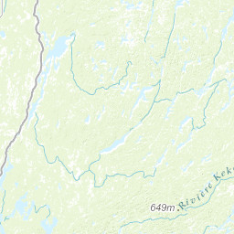
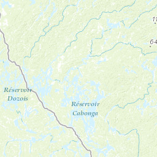
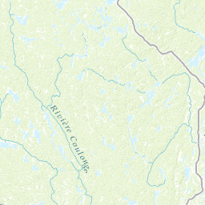
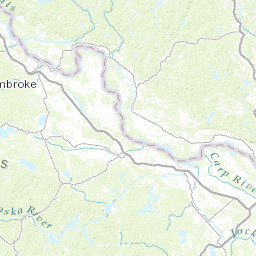
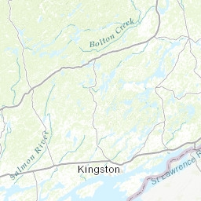
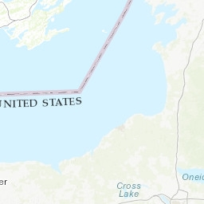
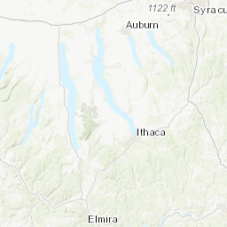
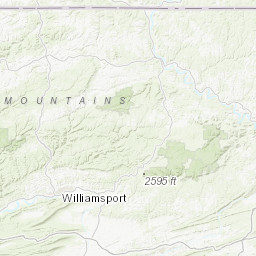
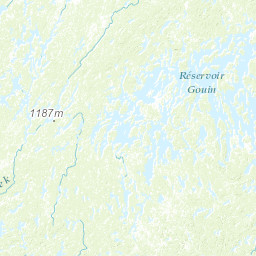
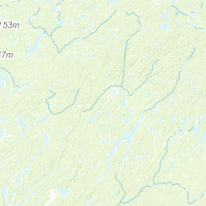
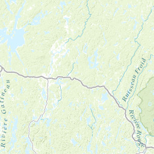
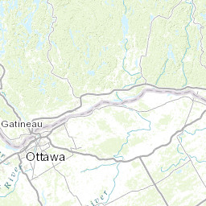
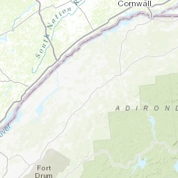
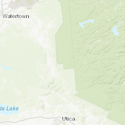
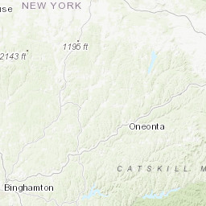
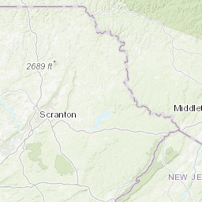
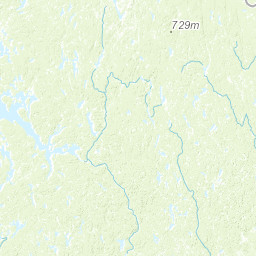
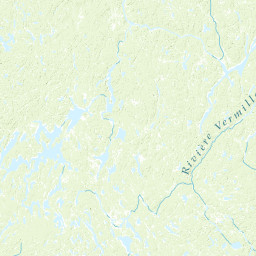
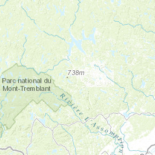
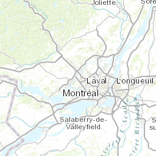
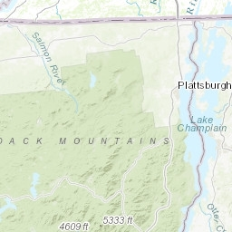
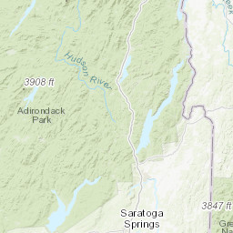
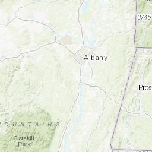
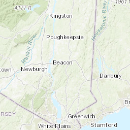
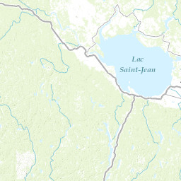
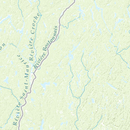
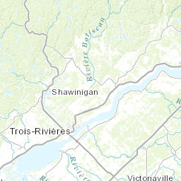
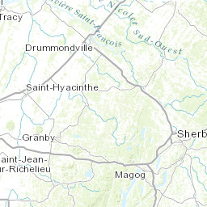
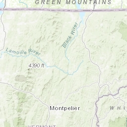
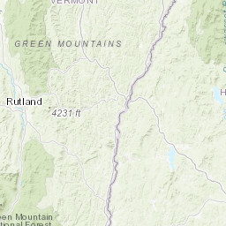
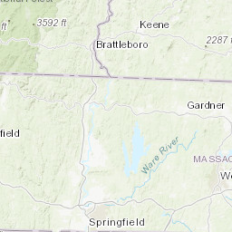
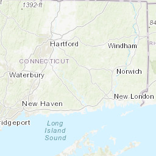
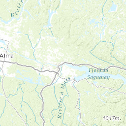
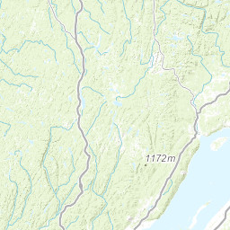
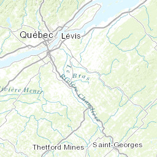
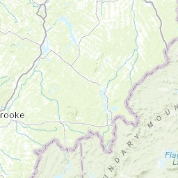
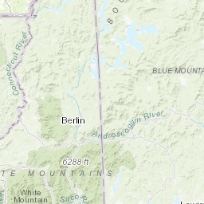
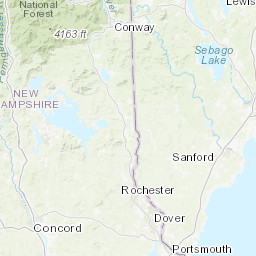
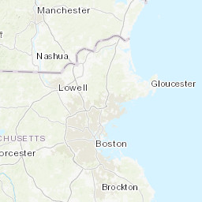
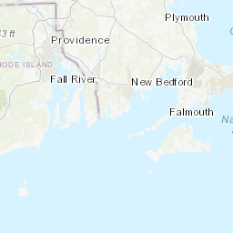
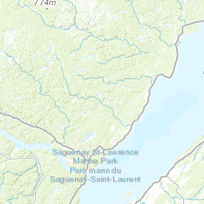
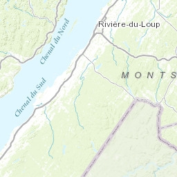
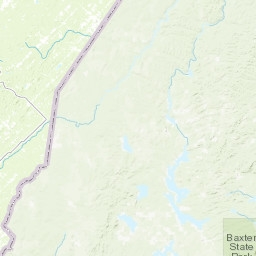
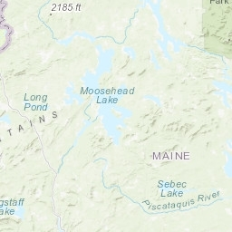
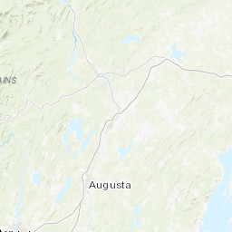
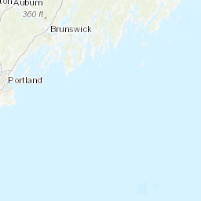
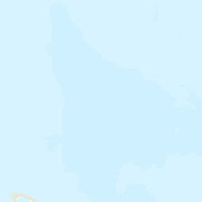
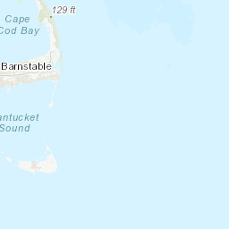
Where we are, day by dayTwelve dates · where you sleep · the day in one line›
The quick-reference table. If someone asks where you'll be on the 31st, this is the answer.
| Day | Date | Where you are | Sleep | The day in one line |
|---|---|---|---|---|
| 0 | Wed Aug 26 | Cheshire → Lincoln, NH | Lincoln, NH | Out of the driveway at 6 p.m.; in bed in the White Mountains by 10:45. |
| 1 | Thu Aug 27 | Franconia Notch, NH | Lincoln, NH | Franconia Ridge Loop — 9 miles, 1.7 of them above treeline. |
| 2 | Fri Aug 28 | NH → Eastern Townships → Montréal | Plateau / Mile End | Border, Gregorian chant at the abbey, Bota Bota, MUTEK. |
| 3 | Sat Aug 29 | Old Montréal | Plateau / Mile End | Notre-Dame, Pointe-à-Callière, AURA, then MUTEK. |
| 4 | Sun Aug 30 | Mile End → Mount Royal → east end | Plateau / Mile End | Bagels, Jean-Talon, Tam-Tams, the Oratory, Gardens of Light. |
| 5 | Mon Aug 31 | Chemin du Roy: Trois-Rivières, Deschambault | Québec City | The oldest road in Canada, with two deliberate stops. |
| 6 | Tue Sep 1 | Old Québec, on foot | Québec City | Walls, Citadelle, the Plains, the cathedral, ferry at sunset. |
| 7 | Wed Sep 2 | Côte-de-Beaupré + Île d'Orléans | Québec City | Montmorency, Sainte-Anne-de-Beaupré, the canyon, the island loop. |
| 8 | Thu Sep 3 | Lower Town + Wendake | Québec City | Musée de la civilisation, the Huron-Wendat, Onhwa' Lumina. |
| 9 | Fri Sep 4 | Québec → Baie-Sainte-Catherine → Route 362 | Baie-Saint-Paul | Whales. Then the balcony road home in golden light. |
| 10 | Sat Sep 5 | Hautes-Gorges-de-la-Rivière-Malbaie | Baie-Saint-Paul | Eight hundred metres of rock wall, and a boat on the floor of it. |
| 11 | Sun Sep 6 | Baie-Saint-Paul → Cheshire | Home | 870 km in one push. Out by 5:30 a.m. |
Bases in short: Lincoln NH ×2 nights (Aug 26–27) · Montréal ×3 (Aug 28–30) · Québec City ×4 (Aug 31 – Sep 3) · Baie-Saint-Paul ×2 (Sep 4–5). Home the night of Sunday Sep 6; Labour Day Monday is a recovery day.
The drive itself, leg by legNine legs · ≈2,400 km · distances, times and the two that need care›
| Leg | Distance | Driving | Notes |
|---|---|---|---|
| Cheshire → Lincoln, NH Wed 26th, 6:00 p.m. | ≈245 mi / 395 km | 4 h 00 – 4 h 30 · 4 h 28 measured | Night drive, arrive ≈10:15–10:45 p.m. Two corridors: I-91 N through Vermont, or I-93 N via Manchester/Concord. Lockbox self check-in at 36 Lodge Road, so no desk to reach. |
| Lincoln → Lafayette Place | 7 mi / 11 km | 12 min | Trailhead. Park by 7:00 a.m. |
| Lincoln → Saint-Benoît-du-Lac, QC | ≈125 mi / 200 km | 2 h 45 + border · 2 h 23 measured | I-93 N → I-91 N → cross at Derby Line / Stanstead → A-55 N. |
| Abbey → Montréal | ≈75 mi / 120 km | 1 h 30 · 1 h 38 measured | A-10 W. Park the car and leave it. |
| Montréal → Québec City (Chemin du Roy) | ≈170 mi / 275 km | 3 h direct · 5–6 h with stops · 3 h 32 measured | A-40 E with deliberate stops at Trois-Rivières and Deschambault. |
| Québec City → Baie-Sainte-Catherine | ≈130 mi / 210 km | 2 h 30 · 2 h 58 measured | Rte 138 E. Whale pier. Free 10-min ferry to Tadoussac. |
| Return via Route 362 → Baie-Saint-Paul | ≈70 mi / 115 km | 1 h 45 with stops · 1 h 49 measured | The balcony road. Golden hour on the descents. |
| Baie-Saint-Paul → Hautes-Gorges | 40 mi / 65 km | 1 h 15 | Rte 138 → St-Aimé-des-Lacs → park road. |
| Baie-Saint-Paul → Cheshire | ≈570 mi / 915 km | 8 h 30 – 9 h 30 + border · 10 h 52 measured | The one genuinely long day. Two drivers, 5:30 a.m. start. |
All times are dry-road, no-traffic planning figures. Re-check with live navigation and Québec 511 the morning of.
One river, four hundred years, and a people who refused to forget.
A good trip has an argument. Ours is la survivance — how a conquered people kept a language, a church, a kitchen and a temperament with no army, no state and no money. Every day below is a piece of the answer. It is a better thing to carry around for eleven days than a checklist.
The argument in full, and how each day answers itThree minutes · why you’re standing in a cold stone church on day seven›
The St. Lawrence is not scenery. It is the reason for everything you will see. It was the Wendat and Innu highway long before it was anyone's frontier. Champlain put a warehouse at the narrowest point in 1608 because ships could be stopped there — that spot is now Place Royale, and you will walk on it. The French cut farms into ribbons running back from the water because the river was the road; that pattern is still legible from the car on Île d'Orléans. The British took the city in 1759 on an open field above the cliff, and then discovered they had conquered a population that would not become English.
What happened next is the interesting part, and it is the actual subject of this trip: la survivance — survival. No army, no state, no money. A language, a church, a birth rate, a cuisine, a stubbornness. Two hundred and fifty years later Québec has its own civil code, its own films, its own music, its own accent that Parisians find charming and impenetrable, and a motto on every licence plate that says only Je me souviens.
Nobody agrees what it remembers. The man who carved it into the Parliament in 1883 never explained. That ambiguity is the most Québécois thing about it — and it is a far better question to carry around for eleven days than a checklist.
How each day answers the question
| Franconia Ridge | The Appalachian spine and the ice that carved it — the same geological story that will produce Hautes-Gorges 900 km later. Start with the land, before anyone was on it. |
| Saint-Benoît-du-Lac | Benedictine monks singing Gregorian chant at 11 a.m. on a Friday. The Church was the institution that carried the language. Here it still is. |
| Montréal | What survival looks like when it becomes cosmopolitan: Jewish bagel bakeries, Haitian and Maghrebi neighbourhoods, an electronic music festival, all conducted in French. |
| Québec City | The wound and the fortress. Walls, a citadel, and the field where it was lost. |
| Wendake | The correction. New France did not arrive in an empty country; it arrived in someone else's. The Huron-Wendat are still here, half an hour from the Château, telling it themselves. |
| Île d'Orléans & Côte-de-Beaupré | The rural engine of survivance — the seigneurial farms, the pilgrimage basilica, the food. |
| Charlevoix & the whales | Where the argument stops mattering. The river becomes an inland sea, the mountains become a crater, and something the size of a house surfaces next to the boat. |
Day by day
Every stop carries what it is, what you actually walk through, why it earns the time, and what it costs. ★ Essential anchors the day. ○ Worth doing if energy and weather hold. + Bonus is optional. You said you can handle packed days — these are packed. Cut from the bottom of each day, never the top.
Franconia Ridge.
You start with a mountain because the rest of the trip is about what people did with a landscape, and it helps to have felt one first. Franconia is also the only day weather can cancel — which is why it is day one, with day two held in reserve.
0Cheshire → Lincoln, New Hampshire · 6:00 p.m.Wednesday, August 26 · the head startEASY: ≈230 mi · 4 h 00–4 h 30 · arrive 10:15–10:45 p.m.›
Cheshire → Lincoln, New Hampshire · 6:00 p.m.
Out of the driveway at six, straight up the valley, in bed in the White Mountains before eleven. This one decision is worth more than any other change to the plan: it turns tomorrow from a nine-hour hike bolted onto a pre-dawn drive into a proper mountain day on rested legs, with the trailhead twelve minutes away.
Do tonight, not tomorrow: fill the tank; buy trail food, salty snacks and 4 L of water at the supermarket on Main St in Lincoln if it's still open, otherwise first thing at 7 a.m.; lay out both packs; download the offline trail map; check the higher-summit forecast before you sleep.
1Franconia Ridge, on fresh legsThursday, August 27VERY HARD: ~9 mi · ~3,900 ft gain · 7–9 h on foot›
Franconia Ridge, on fresh legs
Breakfast at seven, parked at Lafayette Place by 7:15, walking by 7:30. You have the whole day and the whole weather window, and you are not tired before you start.
The day, stop by stop
-
1★ Essential The Franconia Ridge Loop7–9 hours · 8.6–9.2 mi · ≈3,900 ft gain›
For roughly one and seven-tenths of a mile there is nothing above you but sky. The trail runs along a bare rock spine with the land falling away a thousand feet on both sides, three summits strung along it, and the Presidential Range stacked on the horizon. It is, by fairly wide agreement, the finest ridge walk in the eastern United States — and you get it on day one, legs fresh.
Parking: Lafayette Place lot, free, with lots on both sides of I-93 linked by a pedestrian underpass. It fills by roughly 7:30 a.m. on a fine late-August day — being twelve minutes away is the whole advantage of sleeping in Lincoln. Water: nothing reliable above the falls — carry 3 L each. Turnaround rule: if you are not on Little Haystack by 11 a.m., turn around. Stay on the rock above treeline; one footstep off-trail kills tundra that takes decades to regrow. Franconia Notch State Park →
Full detail — what you walk through, and every reason it earns the time
The exact route, clockwise: Falling Waters Trail from Lafayette Place — past Stairs Falls, Swiftwater Falls and Cloudland Falls, three water crossings, steep wet slabs — to Little Haystack Mountain (≈4,760 ft) where the trees stop. Then the open crest north over Mount Lincoln (5,089 ft) to Mount Lafayette (5,249 ft), the sixth-highest peak in New Hampshire. Descend the Greenleaf Trail past Greenleaf Hut, then the Old Bridle Path back down. Go clockwise: Falling Waters is far better climbed than descended, and Old Bridle Path gives you the ridge in profile the whole way down.- Two of New Hampshire's 48 four-thousand-footers — Lincoln and Lafayette — plus Little Haystack, the one 4,000-ft summit on this ridge that doesn't make the list (too little prominence from the col)
- 1.7 continuous miles above treeline — rare east of the Rockies
- Arctic-alpine tundra: plants otherwise found 1,500 miles north
- You walk a stretch of the Appalachian Trail itself
- Greenleaf Hut (AMC, 1930) — soup, water, a roof, a bail-out
- Stone ruins of the 1850s summit house on Lafayette
- Three named waterfalls on the way up
- Clear days: Mount Washington, and into Vermont and Maine
-
2○ Worth doing Flume Gorge — and the whole storm-day plan1½ h · 2 mi loop · US$18 online / $21 gate · Timed ticket›
A boardwalk bolted into an 800-foot slot where Flume Brook has been prising apart a fracture in Conway granite for millennia. The walls run 70 to 90 feet high and close to twelve feet apart. In rain it is better, not worse — which is exactly why it is the backup.
Full bad-weather day: Flume Gorge (1½ h) → The Basin (30 min) → Cannon Mountain Aerial Tramway — 4,080 ft in under seven minutes, and the observation deck works in cloud far better than a ridge does → the Old Man of the Mountain Profile Plaza, where steel "profilers" set in the ground realign the vanished face against the cliff when you stand in the right spot. It collapsed in 2003; the memorial is genuinely moving. Book Flume Gorge →
Full detail — what you walk through, and every reason it earns the time
On the same loop: the Flume covered bridge (one of the oldest in New Hampshire), Avalanche Falls at the head of the gorge, Liberty Gorge, the Wolf Den squeeze, and Table Rock — 500 feet of water-polished granite slab. -
3+ Bonus The Basin & Artist's Bluff30 min / 45 min · Both free›
The Basin is a twenty-foot granite bowl that meltwater has been drilling since the ice left, five minutes from the car — the clearest demonstration of erosion you will ever see, because the tool and the result are in the same frame. Artist's Bluff is a 1.5-mile loop to a bare knob with the entire Notch laid out below it; it is the best sunrise in the White Mountains and takes 45 minutes.
If the ridge went today, skip both now and do Artist's Bluff at sunrise tomorrow — it is a 45-minute investment that gives you the whole valley in gold light on the way out of town.
2Lincoln → the Abbey → MontréalFriday, August 28EASY–MODERATE: ≈4 h 15 driving + border, with a 2 h stop›
Lincoln → the Abbey → Montréal
Cross the border, and stop once — at a Benedictine monastery on a lake that straddles two countries, where the monks still sing the office in Gregorian chant and sell you blue cheese afterwards.
The day, stop by stop
-
1○ Worth doing Artist's Bluff at sunrise · then go45 min · Free · 6:00–6:45 a.m.›
A short, steep, entirely worth-it loop to a bare rock knob above Echo Lake, with the Notch running away south beneath you. Forty-five minutes, and it changes the shape of the whole morning. Breakfast in Lincoln afterwards, on the road by 8:00.
-
2+ Hidden gem The Haskell Free Library, Derby Line / Stanstead20–30 min · Free · Verify access rules first›
A neoclassical opera house and library built deliberately on top of the international boundary in 1904, so that Canadians and Americans could share it. A black line runs across the reading-room floor. The books are in Canada; most of the seats are in the United States. It sits ten minutes from your crossing.
Important: access arrangements at the Haskell have changed in recent years and entry rules now differ by which country you are standing in. Check the library's current visitor policy before detouring — it is a five-minute check that saves an awkward conversation with a border officer. Haskell Free Library & Opera House →
-
3★ Essential Abbaye de Saint-Benoît-du-Lac1½–2 h · Free · donations · Check office times›
Benedictine monks have lived on this peninsula in Lake Memphrémagog since 1912, and they still sing the Divine Office in Gregorian chant, in public, several times a day. Walk into the church, sit down, and listen to a thousand-year-old musical tradition performed by people who are not performing. Then buy their cheese.
Confirm the day's office times on the abbey site before you go — the schedule shifts and you want to arrive fifteen minutes before one of them, not five minutes after. Modest dress; silence inside. abbaye.ca →
Full detail — what you walk through, and every reason it earns the time
What you're looking at: the interior is the work of Dom Paul Bellot, the French monk-architect — polychrome brick, parabolic arches, coloured light — and it is one of the most striking modern church interiors in North America, almost unknown outside Québec. What you're eating: the abbey makes Bleu Bénédictin and Frère Jacques, among the most respected cheeses in the province, plus cider from their own orchards. The shop is the reason half the cars in the lot are there.- Gregorian chant sung live by monks — not a recording, not a concert
- Dom Bellot architecture, free to walk into
- Award-winning monastery blue cheese and cider, bought at source
- A lake that crosses the Canada–US border, seen from a cloister
- Your first proof that the Church is why the language survived
- Costs nothing and takes ninety minutes
-
4Arrive Montréal · park the car for three days · MUTEKEvening on foot · MUTEK outdoor stage: free · 5 p.m. – midnight›
Check in around 4–5 p.m., put the car somewhere legal and forget it until Monday. Then walk twenty-five minutes or take the Métro down to Esplanade Tranquille, where MUTEK's free outdoor stage runs every evening from 5 p.m. until midnight. Ambient, techno, bass, live electronics, no ticket, and it is one of the best-regarded electronic and digital-arts festivals in the world.
This is not a footnote — it is on every Montréal night of your trip. MUTEK runs Aug 25–30, 2026; you have the 28th, 29th and 30th. Wander in, stay twenty minutes or four hours. MUTEK · Esplanade Tranquille →
-
5○ Optional Bota Bota — the recovery spa, 24 hours after the ridge2–3 h · C$60–95 · book ahead›
A day after nine miles and four thousand feet, the correct thing to do with your legs is put them in hot water. Bota Bota is a 1951 river ferry converted into a Nordic spa and moored in the Old Port — decks of saunas, steam rooms, cold plunges, an outdoor pool and silent relaxation areas, with the Montréal skyline over the rail and the river running underneath you.
It is also the single best thing you can do for the next nine days of walking. Sore quads on day two become sore quads on day six if you ignore them.
What's on board: four saunas (one running the Aufguss ritual), five hot baths, two steam rooms, seven cold baths, a pool, a garden and a second boat added recently. Thermal circuit: roughly C$60–85 for two hours from dusk, C$70–95 for three. Swimwear required, sandals rented or brought, phones banned in the circuit — which is the point.How it fits tonight: Bota Bota is a 15-minute walk from Esplanade Tranquille. Water from 6 to 8 p.m., then MUTEK's free stage until late, is a genuinely excellent first night in Montréal. Open to 10 p.m. daily. Book ahead — Friday evenings fill. Alternatives if you'd rather wait: Strøm Nordic Spa in Old Québec (Day 8, ≈C$69 after 5 p.m.) or the spa at Le Germain Charlevoix after the Acropole (Day 10). botabota.ca →
Montréal.
A city built on an island in the middle of the river, at the exact point where the rapids stopped the boats. Everything since — the fur trade, the canal, the factories, the immigration, the bagels, the festivals — followed from that. You live in the Plateau and visit the rest.
3Old Montréal, and a basilica that turns into lightSaturday, August 29MODERATE: long walking day, flat, cobbles›
Old Montréal, and a basilica that turns into light
The oldest quarter in the morning, the archaeology underneath it in the afternoon, and after dark the same basilica you walked through at noon, unrecognisable.
The day, stop by stop
-
1★ Essential Notre-Dame Basilica & Place d'Armes1 h · Adult sightseeing ticket · Buy online›
You step out of a grey stone square into a cavern of cobalt blue and gold, and the scale of it stops conversation. Twenty-four-carat gold stars across a deep-blue vault, carved walnut, a Casavant organ with nearly 7,000 pipes, and light coming through stained glass that tells the history of Montréal rather than the life of Christ — which tells you everything about this city.
Hours & rates change — check before you go. Sunday sightseeing starts around midday, which is why this is a Saturday. basiliquenotredame.ca →
Full detail — what you walk through, and every reason it earns the time
What you are actually looking at: built 1824–29 to a design by James O'Donnell, an Irish Protestant from New York who converted on his deathbed so he could be buried in the crypt — he is still there. Behind the main church is the Sacré-Cœur Chapel, rebuilt after a 1978 arson with a 17-metre modern bronze reredos, and known locally as the Wedding Chapel. Outside on Place d'Armes: four centuries in one square — the Bank of Montreal (1847, Pantheon dome), the red sandstone New York Life Building (1888, the city's first skyscraper at eight storeys), and the Aldred Building (1931, an Art Deco ziggurat that looks like the Empire State's little brother.- One of the great church interiors in North America — and unlike anything in Europe
- The only Gothic Revival nave anywhere painted in that blue
- Céline Dion was married here; Leonard Cohen's funeral was here
- Its architect is buried in the building he designed
- Place d'Armes outside compresses 1847–1931 into one view
-
2★ Essential Pointe-à-Callière1½–2 h · ≈C$30 adult›
Not a museum about the founding of Montréal — a museum built on it. You descend below street level onto the actual 1642 site of Fort Ville-Marie, walk past the city's first Catholic cemetery, and then along the inside of a stone-vaulted tunnel that is the oldest collector sewer in North America: the Little Saint-Pierre River, buried alive in 1832 to stop the cholera.
Full detail — what you walk through, and every reason it earns the time
What you walk through: the fort footprint · the 1643 cemetery · the vaulted collector sewer, in the dark, underground, for about a hundred metres · Ancienne-Douane, the 1836 Custom House · and the multimedia show in the crypt that reconstructs the site layer by layer. Allow the full two hours; people consistently under-budget this one.- Stand on the precise spot Montréal was founded, below the modern street
- Walk inside a buried river
- Best archaeology museum in Canada, by most accounts
- Air-conditioned and indoors — the rain plan for this entire day
-
3The streets themselves — and three small things most people miss2 h wandering · Free›
Rue Saint-Paul has been a street since 1672 and is the oldest in the city. Walk it east to the domed Bonsecours Market, once Canada's parliament building's neighbour and now a gallery hall.
If you want the water: Bota Bota is a Nordic spa built into a converted 1951 ferry moored in the Old Port — thermal circuit with the city skyline over the rail. Book ahead; it is a genuinely good use of two hours if the legs are complaining after Franconia.
Full detail — what you walk through, and every reason it earns the time
Three worth stepping into: Notre-Dame-de-Bon-Secours Chapel — the Sailors' Church, 1771, with wooden votive ships hanging from the ceiling given by sailors who survived crossings, an archaeological crypt beneath, and a tower you can climb for the best free view of the Old Port. Château Ramezay — the 1705 governor's residence opposite City Hall, now a museum with a formal New France garden behind it; Benjamin Franklin stayed here in 1776 trying to talk Québec into joining the American Revolution, and failed. Place Jacques-Cartier — the sloping square, best at the top by Nelson's Column. -
4★ Essential AURA — then MUTEK, ten minutes away30 min show · ≈C$30 · Sells out — book now›
Moment Factory — the Montréal studio that lights Cirque du Soleil, airports and Billie Eilish tours — turns the basilica's own architecture into the screen. Projection climbs the columns, the vault dissolves, an orchestral score plays through the nave. Thirty minutes, and it is the single most spectacular half-hour available to you in this city.
Then walk ten minutes north to Esplanade Tranquille for the MUTEK free outdoor stage, running to midnight. Two completely different Montréals in one evening, both of them free or nearly. Book AURA → · MUTEK tonight →
4Bagels, the market, the drums, the dome, the lanternsSunday, August 30MODERATE–FULL: 6–8 miles of walking, one real hill›
Bagels, the market, the drums, the dome, the lanterns
The best day of the Montréal stay, and it is almost entirely free. Sunday is the one day the mountain fills with drummers, and the one day the whole city is outside.
The day, stop by stop
-
1★ Essential The bagel schism, settled in person · 8:30 a.m.45 min · ≈C$5 · Both open 24 hours›
Montréal bagels are hand-rolled, boiled in honey water and baked in a wood-fired oven, which makes them smaller, sweeter, denser and better than the New York kind — a position the city will defend at length. Two bakeries four minutes apart have been arguing about it since the 1950s.
Then walk Mile End for an hour: Café Olimpico for the espresso the neighbourhood actually drinks · the murals off Saint-Viateur and Bernard · the Rialto Theatre on av. du Parc, a 1923 neo-baroque movie palace and National Historic Site · and the ruelles vertes, the resident-planted green alleys running behind the plexes. The Plateau alone has roughly 120 of them. They are the most Montréal thing in Montréal and no tour goes down one.
Full detail — what you walk through, and every reason it earns the time
Do this properly: St-Viateur Bagel, 263 rue Saint-Viateur O — buy one sesame, hot, out of the paper bag, on the sidewalk. Walk four minutes to Fairmount Bagel, 74 av. Fairmount O — buy one sesame, hot. Eat both. Decide. Neither is a meal; both are 24 hours a day, 365 days a year, and have been for decades. -
2★ Essential Marché Jean-Talon1–1½ h · Free to enter · Bring cash for stalls›
One of the largest open-air public markets in North America, and you have arrived in the single best week of its year. Québec's growing season runs about ninety days; you are standing at the end of it. Field tomatoes, corn, ground cherries, wild blueberries, plums, garlic, twenty kinds of squash, and producers who drove them in this morning.
Full detail — what you walk through, and every reason it earns the time
What to actually buy: cerises de terre (ground cherries — a Québec obsession, sweet, husked, briefly in season right now) · a wedge from the cheese counters, ideally a raw-milk Québec cheese you cannot legally buy at home · fresh bread · maple products from a producer rather than a souvenir shop · and cider. This is also where you buy the picnic for the drive to Québec City tomorrow.- Peak of a ninety-day harvest — the best week of the market's year
- Québec raw-milk cheeses, unavailable in the US
- Ground cherries, in season for about three weeks a year
- Entirely vegetarian-friendly and entirely free to walk
-
3★ Essential Tam-Tams & the Kondiaronk Belvédère · Sunday only2–3 h · Free · Drums ≈12–6 p.m.›
Every Sunday since the late 1970s, without organisation, permit or leader, several hundred people have gathered around the George-Étienne Cartier Monument on the east flank of Mount Royal and drummed until dusk. Around them: hoop dancers, a hippie market, picnics, and — in the woods just uphill — a long-running foam-sword medieval combat society, entirely straight-faced. It is free, it is genuinely strange, and it happens on your Sunday.
Full detail — what you walk through, and every reason it earns the time
Then climb. Mount Royal Park was laid out by Frederick Law Olmsted — the man who designed Central Park — and he deliberately refused to put a road to the summit. The Kondiaronk Belvédère at the chalet gives you the whole city, the river and the Monteregian hills beyond. It is named for the Wendat chief Kondiaronk, who brokered the Great Peace of Montreal in 1701 between France and thirty-nine First Nations, and died days before it was signed. Remember the name — you meet his nation again on Day 8.- A 45-year-old unlicensed drum circle, free, Sundays only
- An Olmsted park — the Central Park designer's other masterpiece
- The definitive view of Montréal
- Named for the Indigenous diplomat who made the city safe to live in
-
4★ Essential Saint Joseph's Oratory1½ h · Entry free · parking ≈C$4 · Open to 9 p.m.›
Walk over the summit and down the far side and it appears above the trees: the largest church dome in Canada and one of the largest on earth, standing on the shoulder of the mountain. It was started in 1904 by Brother André Bessette, an illiterate doorman at a nearby college, with the proceeds of haircuts. He was canonised in 2010. Two million people come a year.
If legs are done, Métro Côte-des-Neiges gets you there in ten minutes instead. Modest dress.
Full detail — what you walk through, and every reason it earns the time
What you walk through: the 283 steps up the front — the wooden central flight is reserved for pilgrims climbing on their knees, and on any given day someone is · the votive chapel, where the walls are hung floor-to-ceiling with abandoned crutches and canes and thousands of candles · Brother André's tomb and his preserved heart · the vast, austere modern basilica above, with a Beckerath organ and a Guibert crucifix · the carillon, cast for the Eiffel Tower and never installed there · and the gardens with a life-size Way of the Cross carved in stone.- Largest church dome in Canada; among the largest anywhere
- Founded by a barely literate porter who is now a saint
- The crutch wall — one of the most affecting rooms in Canada
- A carillon originally cast for the Eiffel Tower
- Free, open until 9 p.m., and 25 minutes' walk from Mount Royal's summit
-
5★ Essential Gardens of Light · Botanical Garden1½–2 h · Timed ticket · Book — opening weekend›
Two kilometres of illuminated garden after dark: the Chinese Garden filled with hand-made silk lanterns, the Japanese Garden lit in stillness, and the First Nations Garden. The 2026 edition — the thirteenth — is built on the Shan Hai Jing, the ancient Chinese Classic of Mountains and Seas, and the lanterns take a year to make in Shanghai.
It opens August 29, 2026 and runs to Nov 2 — you are there on its opening weekend, which means book the timed entry the moment tickets go live. Métro Pie-IX. Gardens of Light →
The alternative, if you'd rather end on music: tonight is MUTEK's closing night at Esplanade Tranquille. You can't do both properly. Pick by weather and by how the legs feel.
5The Chemin du Roy to Québec CityMonday, August 31MODERATE: 3 h driving, 5–6 h with both stops›
The Chemin du Roy to Québec City
Not a transfer — the oldest road in the country. The King's Road opened in 1737 as the first route in Canada built for carriages, running 280 km along the north shore between the two cities. You drive the fast road and drop onto the old one twice.
The day, stop by stop
-
1○ Worth doing Trois-Rivières — and a prison tour run by its former inmates2 h + lunch · Museum / tour admission›
Founded in 1634, the second-oldest city in Québec, sitting where the Saint-Maurice River comes down out of the north woods in three channels. The old quarter is small, stone, and almost entirely unvisited by Americans.
Full detail — what you walk through, and every reason it earns the time
Walk: rue des Ursulines — the best-preserved 18th-century street ensemble in the province, with the 1697 Ursuline monastery and its silver dome. Then the one people remember: the Vieille prison de Trois-Rivières, a jail in continuous use from 1822 to 1986, now part of Musée POP — and the guided tours are led by men who were incarcerated in it. It is unflinching, occasionally very funny, and unlike anything else you will do on this trip. Book ahead; English tours are limited.- Second-oldest city in Québec, founded 1634
- A 1697 Ursuline monastery still standing on its original street
- A 164-year-old prison toured with its own ex-prisoners
- Lunch here is half Montréal prices
-
2○ Worth doing Deschambault-Grondines45–60 min · Free to wander›
One of the officially designated plus beaux villages of Québec, and the single best place on the whole drive to understand what the seigneurial system actually looked like on the ground. Park at the church and walk out to the point.
Full detail — what you walk through, and every reason it earns the time
What's there: the Église Saint-Joseph (1837) with its two silver spires standing on Cap Lauzon, a rock promontory straight above the river · the Vieux Presbytère (1815) beside it · and the Moulin de La Chevrotière, an 1802 stone flour mill. Stand at the church and look east: the long narrow fields running back from the water are the original seigneurial rangs, unchanged since the 1600s, because the river was the road. -
3Arrive Québec City · rue Saint-Jean in the eveningEvening on foot · Free›
Park the car and leave it until Wednesday morning. Then walk your own street: rue Saint-Jean outside the walls, which is where Québec City actually eats and drinks. Stop at Épicerie J.A. Moisan at number 699 — opened in 1871, tin ceilings, apothecary drawers, and a plausible claim to being the oldest grocery store in North America. Buy breakfast for the week.
Note: the Musée de la civilisation is closed Mondays, so nothing is lost by arriving late today.
Québec City.
The river narrows to under a kilometre here beneath a 90-metre cliff, which is why Champlain stopped in 1608, why the walls went up, why the battle was fought, and why the city looks the way it does. Read it from the water upward and it explains itself.
6Old Québec, top to bottomTuesday, September 1MODERATE–HARD: 6–7 miles, real hills, stairs, cobbles›
Old Québec, top to bottom
The whole city in one day, in the order it was built: the walls, the citadel, the battlefield, the cathedral, then down the cliff by the oldest staircase in Canada into the oldest commercial street in North America — and out onto the river at sunset to see what you've been standing on.
The day, stop by stop
-
1★ Essential Walk the walls — 4.6 km, and free1–1½ h · Free · Canada Strong Pass to Sep 7›
These are the only intact fortified city walls anywhere in North America north of Mexico, and you can walk the entire circuit on top of them. That single fact is why Old Québec became a UNESCO World Heritage Site in 1985 — the first urban site in North America to be listed.
Fortifications of Québec → · Canada Strong Pass →
Full detail — what you walk through, and every reason it earns the time
The circuit: start at Porte Saint-Louis, the theatrical 1878 gate, and walk the rampart north past the Governors' bastions to Porte Kent and Porte Saint-Jean, then down toward Porte Prescott and the cliff edge. Step into Artillery Park on the way — the Dauphine Redoubt (begun 1712), the officers' quarters, and an enormous 1808 scale model of Québec built for the Duke of Kent, which shows you the entire city as it was before anything you're standing on existed. All of it free through September 7 under the Canada Strong Pass.- The only walled city in North America north of Mexico
- UNESCO World Heritage — the first urban site listed on the continent
- You walk on top of the walls, not beside them
- A 1808 scale model of the city, indoors and free
- Parks Canada guided programmes included — check times on arrival
-
2★ Essential La Citadelle1½ h guided · ≈C$18 adult · Guided tour only›
A star-shaped fortress cut into the highest point of Cap Diamant, 100 metres straight above the St. Lawrence — and still a working military base, which is why you can only go in with a guide. It is the largest British-built fortification in North America and it has never fired a shot in anger.
Be aware: the Citadelle's summer ceremonial season — the daily musical performance on the parade ground by the regimental band in scarlet and bearskins — ends August 30, 2026, the day before you arrive. There is no way to catch it without moving the Montréal leg a day earlier. The fortress tour itself runs regardless and is worth doing. Hours & tickets →
Full detail — what you walk through, and every reason it earns the time
What you see: the 1750 French powder magazine, the oldest building on the site · the 1831 Governor General's residence, still an official residence today · the Royal 22e Régiment Museum · and the regiment itself — the "Van Doos", the only French-speaking infantry regiment in the Canadian Army, formed in 1914 partly to prove the point. Their mascot is a goat named Batisse. It is not a joke; he has a rank. -
3★ Essential The Plains of Abraham1½–2 h · Park free · Museum extra›
On the morning of 13 September 1759, after scaling the cliff in the dark, 4,400 British troops formed two ranks on this open ground. The French came out to meet them. The battle lasted roughly fifteen minutes and decided which language North America north of Mexico would speak. Both commanding generals — Wolfe and Montcalm — died of their wounds within a day of each other.
Full detail — what you walk through, and every reason it earns the time
On the ground now: 98 hectares of grass and trees that Quebecers use as their back garden · Martello Tower 1 (1808–12), one of four squat cannon-proof drums built against an American attack that never came · the Joan of Arc Garden, a formal sunken garden with a bronze equestrian Joan given anonymously in 1938 · and the Plains of Abraham Museum, which is the clearest multimedia account of the battle you'll get. Walk to the cliff edge at the Gilmour Hill side and look down: that is what the British climbed at 4 a.m.- One of the most consequential twenty minutes in North American history
- Both generals died here; both have monuments
- Napoleonic-era Martello towers you can walk into
- A formal garden most visitors never find
- Free, open, and full of locals running and picnicking
-
4★ Essential Notre-Dame de Québec — and the only Holy Door in the Americas45–60 min · Entry free · Crypt C$5›
The oldest parish north of Mexico — established 1664 — and the seat of the first Catholic bishop in the New World outside Mexico. It has been destroyed twice, by British bombardment in 1759 and by fire in 1922, and rebuilt exactly both times, which is a fairly precise metaphor for the province.
Nearby and almost nobody goes: the Morrin Centre, two minutes away — a building that was the city jail from 1808 to 1868, then a college, and is now the Literary & Historical Society of Quebec's Victorian library, all dark wood galleries and iron balconies. You can tour the cells and the library in the same hour. It is the best hidden gem inside the walls.
Full detail — what you walk through, and every reason it earns the time
Two things to find: the Holy Door — installed in 2013 for the parish's 350th anniversary, one of only eight in the world and the only one outside Europe. Walking through a Holy Door is a formal act in Catholic tradition; you can simply do it, whatever you believe. And the crypt, C$5 and worth every cent: roughly 900 people are buried under the floor, including four governors of New France, Samuel de Champlain's successors, and Bishop François de Laval, who effectively built the Church in Canada. There is also a gilded baldachin over the altar and a chancel lamp given by Louis XIV.- The only Holy Door in the Americas — one of eight anywhere
- Oldest parish north of Spanish Mexico, founded 1664
- Four governors of New France under the floor
- A lamp presented by Louis XIV, still burning
- Free to enter; the crypt costs five dollars
-
5★ Essential Dufferin Terrace & the palaces underneath it1 h · Both free›
A 425-metre boardwalk on the lip of the cliff, with the Château Frontenac behind you and the river 60 metres below. It is the most photographed spot in Canada and it deserves it. What almost nobody realises is that they are standing on a roof.
The Château Frontenac itself (1893, Bruce Price, the building that invented the Canadian "château style" railway hotel and is often called the most photographed hotel in the world) can be walked into. Have a drink at 1608, the lobby-level bar, or take the hotel's own guided history tour. Saint-Louis Forts & Châteaux →
Full detail — what you walk through, and every reason it earns the time
Go down the hatch: beneath the boards are the excavated remains of Fort Saint-Louis and the Château Saint-Louis — the residence and seat of government of the governors of New France and then of British Québec, continuously from 1620 to 1834, when it burned. You walk through the actual foundations, kitchens and vaults. Free through September 7 under the Canada Strong Pass. Then climb the Promenade des Gouverneurs — 310 wooden steps along the cliff face from the terrace up to the Plains, with the river the whole way. -
6★ Essential Down the Breakneck Steps to Place Royale2 h · Free · Best after 4:30 p.m.›
The Escalier Casse-Cou — the "Breakneck Steps" — has connected the Upper and Lower Towns since 1635 and is the oldest stairway in the country. At the bottom is rue du Petit-Champlain, generally called the oldest commercial street in North America: a narrow lane of 17th- and 18th-century stone houses under the cliff, strung with lights.
Full detail — what you walk through, and every reason it earns the time
Two hundred metres away is the actual beginning of the country. Place Royale is the site of Champlain's 1608 Abitation — the first permanent French settlement in North America. On the square stands Notre-Dame-des-Victoires (1688), the oldest stone church on the continent, built directly on the Abitation's foundations, with a model ship hanging in the nave. Around the corner is the Fresque des Québécois, a 420 m² trompe-l'œil mural where sixteen figures from four centuries of Québec history share one painted street.- Oldest commercial street in North America
- The exact ground on which Canada was founded, in 1608
- The oldest stone church on the continent, 1688
- The oldest staircase in Canada, 1635
- A five-storey mural you can spend twenty minutes reading
- The funicular back up is C$5 if the legs are finished
-
7★ Essential The Lévis ferry at sunset · C$4.2545–75 min round trip · C$4.25 each way · Go for golden hour›
Twelve minutes across the river and everything you walked today assembles into one image: the Lower Town at the waterline, the cliff above it, the Citadelle on the point, the Château on the crown. Stay on the Lévis side for ten minutes on the terrace and come straight back. It is four dollars and twenty-five cents, and it is the best view in eastern Canada.
Check the current timetable and fare — the crossing runs frequently into the evening. Société des traversiers →
7Côte-de-Beaupré & Île d'OrléansWednesday, September 2MODERATE: ≈110 km of easy driving, several short walks, one long stair if you want it›
Côte-de-Beaupré & Île d'Orléans
A waterfall taller than Niagara before nine, a basilica that takes a million pilgrims a year by eleven, three suspension bridges over a canyon at one, and the afternoon driving an island of 17th-century farms. The single best-value day of the trip.
The day, stop by stop
-
1★ Essential Montmorency Falls1½–2 h · Park access ≈C$14 · cable car ≈C$15 return · Buy online›
Eighty-three metres of river falling off the edge of the Canadian Shield into the St. Lawrence — thirty metres taller than Niagara. You can stand at the bottom in the spray, cross a suspension bridge directly over the lip, or take a zipline through the gorge. It is fifteen minutes from your apartment.
Sépaq · Parc de la Chute-Montmorency →
Full detail — what you walk through, and every reason it earns the time
How to do it right: park at the lower lot first and walk to the foot of the falls for the scale, then take the cable car up (or the 487-step panoramic staircase if you're feeling proud) to the suspension bridge across the crest — you stand directly above 83 metres of falling water. At the top is Manoir Montmorency, a 1780s villa built by the future King William IV's brother, the Duke of Kent, who lived here with his mistress. For the adrenaline: a 300-metre zipline across the face of the falls, and a via ferrata bolted to the cliff — both bookable on the day, both spectacular.- 30 metres taller than Niagara Falls
- A suspension bridge directly over the crest
- The literal edge of the Canadian Shield — the geology of half a continent
- Zipline and via ferrata if you want the adrenaline version
- 15 minutes from the city; free to enter, you pay for the lifts
-
2★ Essential Basilique Sainte-Anne-de-Beaupré1–1½ h · Free›
A million people a year come here, and almost no Americans. It is the oldest pilgrimage site in North America — sailors shipwrecked off this shore in 1658 built the first chapel in thanks — and the present basilica, finished in 1926, is the fifth church on the spot. The interior is a cathedral of mosaic and glass, and then you notice the columns by the door.
Full detail — what you walk through, and every reason it earns the time
What stops you: two pillars inside the entrance are stacked with crutches, canes and braces, left by people who say they walked out without them. Beyond: 240 stained-glass windows, mosaic floors and vaults executed by French and Italian craftsmen over decades, a granite exterior with twin 91-metre spires, and a relic of Saint Anne. Next door is the Cyclorama of Jerusalem — a 110-metre-long, 14-metre-high 360° panoramic painting of Jerusalem at the Crucifixion, made in Munich in 1895, one of the last surviving cycloramas on earth and a magnificently strange thing to find in rural Québec.- Oldest pilgrimage site in North America, since 1658
- A million pilgrims a year — you'll be among them
- 240 stained-glass windows and a fully mosaicked interior
- The pillars of abandoned crutches
- An 1895 cyclorama of Jerusalem, 110 m around, next door
- Free
-
3○ Worth doing Canyon Sainte-Anne1–1½ h · ≈C$15 adult›
The Sainte-Anne-du-Nord River drops 74 metres into a slot it has been cutting through 1.2-billion-year-old granite since the ice left. You cross it three times on suspension bridges, the highest of them sixty metres above the water, and the whole thing takes an hour.
Full detail — what you walk through, and every reason it earns the time
The circuit: three suspension footbridges at different heights, a network of stairs and boardwalks down into the gorge, giant potholes drilled by the meltwater, and — for an extra fee — a via ferrata and a zipline across the canyon. Eight minutes past the basilica. Skip it only if the day is running long; it is the third-best waterfall in the region and almost nobody outside Québec has heard of it. -
4★ Essential Île d'Orléans — the 67-kilometre loop3½–4½ h · Roads & villages free · Food & museums›
Cross one bridge and you are in the seventeenth century. Six parish villages, roughly six hundred heritage buildings, and the whole island declared a historic district in 1970 — the first in Québec. Jacques Cartier landed here in 1535 and named it for the wild grapes. Farming families have been on the same lots since the 1650s.
Finish at Sainte-Pétronille for sunset and drive back over the bridge with the city lighting up in front of you.
Full detail — what you walk through, and every reason it earns the time
Drive it anticlockwise and stop at these:
Sainte-Pétronille — the west tip, and the single best view on the island: Montmorency Falls, the cliff, and the Québec City skyline in one frame. The Chocolaterie de l'Île d'Orléans is here.
Saint-Laurent — the boatbuilding village; the Parc maritime preserves the shipyard where the island's flat-bottomed chaloupes were built.
Saint-Jean — the Manoir Mauvide-Genest, 1734, the best-preserved seigneurial manor in Québec, and a museum.
Sainte-Famille — the 1743 parish church with three bell towers, the oldest on the island and one of the oldest in the province.
Saint-Pierre — Cassis Monna & Filles, a blackcurrant estate run by the third generation, with a terrace over the river and a blackcurrant sorbet worth the drive. Nearby, Espace Félix-Leclerc honours Québec's founding singer-songwriter, who lived and is buried on the island.
Everywhere: roadside stands with strawberries, apples, corn, cider and maple.- Québec's first protected historic district, 1970
- ≈600 heritage buildings; families on the same land since the 1650s
- A 1734 seigneurial manor you can walk through
- A 1743 church, among the oldest in Québec
- The seigneurial ribbon-farm pattern still visible from the car
- Blackcurrant estate, chocolaterie, vineyards, farm stands — all vegetarian-easy
- The best single view of Québec City, from Sainte-Pétronille
8The other history — Wendake, and a night walk in the woodsThursday, September 3MODERATE: a museum morning, a 20-minute drive, an evening walk›
The other history — Wendake, and a night walk in the woods
You have spent two days inside a French and then British story. Today you hear it from the nation that was already here, from their own museum, in their own community — and end after dark on a 1.2-kilometre light-and-sound walk through their forest.
The day, stop by stop
-
1★ Essential Musée de la civilisation · morning2–2½ h · Adult admission · Opens 10 a.m. · closed Mondays›
The best museum in the city and one of the best in Canada — a Moshe Safdie building in the Lower Town that swallowed an 18th-century merchant's house and the excavated hull of a 1750s river boat and built itself around both. The permanent exhibition on the eleven Indigenous nations of Québec is curated with those nations, and it is the right preparation for the afternoon.
Full detail — what you walk through, and every reason it earns the time
Go for: « C'est notre histoire » — Premiers Peuples, the permanent First Nations and Inuit exhibition, told in their voices · « Le Temps des Québécois », four centuries of Québec in one room · the preserved Maison Estèbe (1752) and the bateau hull embedded in the foundations · and whatever the temporary show is. Two hours minimum; the museum rewards three. -
2★ Essential Wendake & the Huron-Wendat Museum2½–3 h · Museum + longhouse · Reserve guided programmes›
Twenty minutes from the Château Frontenac is a Huron-Wendat community of several thousand people, on their own land, running their own national museum. This is not a reconstruction village for tourists — more than half the Nation still lives here — and the story it tells reframes everything you saw in the Old City.
Check the guided-programme schedule and reserve — the longhouse and storytelling sessions run at set times. museehuronwendat.ca → · Tourisme Wendake →
Full detail — what you walk through, and every reason it earns the time
What's there: the Musée huron-wendat, the Nation's national institution, whose permanent exhibition runs from precontact Wendake through the destruction of Huronia in 1649, the flight east, the fur-trade alliances and the diplomacy — including the Great Peace of 1701 brokered by Kondiaronk, whose name you read on the belvedere in Montréal · the Ekionkiestha' national longhouse, a full-scale traditional longhouse you can enter, ideally with a guide · the Notre-Dame-de-Lorette chapel (1730), a tiny mission church holding treasures given by the kings of France · and the Chute Kabir Kouba, a 28-metre waterfall in a limestone gorge running right through the community, with an interpretation centre and a footpath.- A First Nation telling its own history, in its own museum, on its own land
- Walk inside a full-scale longhouse
- A 1730 mission chapel with gifts from the French crown
- A 28-metre waterfall and gorge inside the village
- The other half of the story you've been hearing for three days
- Indigenous fine dining at La Traite, on site
-
3★ Essential Dinner at La Traite · then Onhwa' LuminaDinner 6:00 · walk 8:00 p.m. · ≈C$34 + tax · parking C$10.50 · Book both›
La Traite, in the Hôtel-Musée Premières Nations, is one of the very few restaurants in Canada doing serious Indigenous cooking — boreal herbs, wild mushrooms, fir, sumac, corn, squash and beans — with proper vegetarian composition rather than a sad afterthought. Eat early.
Then walk into the woods. Onhwa' Lumina is a 1.2-kilometre night trail by Moment Factory, made with the Huron-Wendat Nation: projection, light, sculpture and an original score built from Wendat song and story. It runs about an hour, mostly outdoors, and it is the emotional close of your Québec City stay.
Dress warm — early September evenings in the woods north of the city drop to 8–10 °C. Flat shoes; the path is gravel. onhwalumina.ca →
Full detail — what you walk through, and every reason it earns the time
- Runs nightly only from Aug 28 to Sep 6, 2026 — most of the season it is Fridays and Saturdays only, so you can pick any evening
- Moment Factory, the same studio behind AURA in Montréal
- Made with the Nation, not about it
- Outdoors, after dark, 1.2 km, roughly an hour
Charlevoix, the fjord and the whales.
Three hundred and fifty million years ago a rock two kilometres across hit here and left a crater fifty-four kilometres wide. Ice deepened it, the river flooded its southern rim, and people have been farming inside it since the 1670s. Past its far edge the St. Lawrence becomes salt, a fjord comes down out of the north, and the largest animals on earth come to feed.
9Québec City → the whales → Route 362 → Baie-Saint-PaulFriday, September 4LONG BUT EASY: ≈330 km driving across the day, 3 h on a boat›
Québec City → the whales → Route 362 → Baie-Saint-Paul
The biggest day of the trip and the one you'll talk about for years. Out early along the north shore, three hours on the water where the fjord meets the estuary, then home down the most beautiful road in Québec with the light going gold.
The day, stop by stop
-
1★ Essential Whale watching · Saguenay–St. Lawrence Marine Park3 h on the water · From ≈C$135 adult · Book well ahead›
This is routinely described as the best whale-watching site in the world, and the reason is geography: a cold, 270-metre-deep fjord empties into the St. Lawrence here, and the collision forces nutrient-rich water up from the bottom. Krill and capelin concentrate in it. Thirteen species of marine mammal come to eat. In early September, that includes fin whales and — with luck — blue whales, the largest animals that have ever lived on this planet, at up to thirty metres and 150 tonnes.
Dress for twenty degrees colder than land — windproof shell, hat, gloves, layers. Binoculars if you have them. Croisières AML · Charlevoix departures →
Full detail — what you walk through, and every reason it earns the time
Realistically, what you'll see: minke and fin whales are near-certain; humpbacks common and the most theatrical (they breach); belugas are resident year-round — a small, endangered, entirely white population of a few hundred that never leaves the estuary, and Canadian law keeps boats well back from them, which is exactly as it should be. Blue whales are the prize and are not guaranteed. Seals throughout.Boat or Zodiac — the actual trade-off.
The 3-hour boat (≈C$135) — take this one. Stable, heated indoor cabin, washrooms, open upper decks, and a naturalist on the microphone the whole way. Crucially, AML's whale guarantee applies only to the boat: if the captain judges that no marine mammals were seen, they hand you a free pass to come back. Higher vantage also means you spot blows further off.
The Zodiac (2 h ≈C$100 / 2½ h ≈C$135) is an inflatable that skims the surface — faster, lower, closer to the water, and genuinely thrilling. They issue you flotation coveralls. You will still get wet and cold, there is no cabin and no washroom, and the whale guarantee does not cover it. It is also barred to pregnant passengers, under-5s and anyone with back problems — the pounding over chop is hard on a spine.
For this trip specifically: you hike the Acropole des Draveurs the next morning — roughly 800 m of climbing. Taking a two-hour spinal hammering the day before is a poor trade. Book the boat.- Widely rated the world's best whale-watching, and you're in peak season
- Up to 13 species of marine mammal in one bay
- Blue whales — the largest animal ever to exist — feed here in September
- Resident endangered belugas, found nowhere else in the world
- AML's whale guarantee: no mammals sighted, and they re-issue the cruise
- You cruise into the mouth of a genuine fjord on the same trip
-
2○ Worth doing Pointe-Noire, and the free ferry to Tadoussac1½–2 h · Ferry free · Pointe-Noire free to Sep 7›
Before or after the cruise, walk out to the Pointe-Noire Interpretation and Observation Centre at the very tip of Baie-Sainte-Catherine, where the fjord meets the estuary. It is a Parks Canada site — free through September 7 — with a lighthouse, a viewing platform on the rocks, and belugas visible from shore on a good day. Whale watching without a boat, for nothing.
Budget 90 minutes for the crossing, the village and lunch. If time is tight, skip Tadoussac — you have Route 362 ahead and it deserves the light.
Full detail — what you walk through, and every reason it earns the time
Then cross. The Tadoussac ferry is free, takes ten minutes, and runs continuously across the mouth of the Saguenay — one of the great short boat rides anywhere. On the far side: Tadoussac, a trading post established in 1600, eight years before Québec City, making it the oldest surviving French settlement in the Americas. Walk to the red-roofed Hôtel Tadoussac, the reconstructed 1747 Petite Chapelle (the oldest wooden church in Canada), and the sand dunes above the bay. -
3★ Essential Route 362 — the balcony road, in golden light2–2½ h with stops · Free · 4:00–6:30 p.m.›
From La Malbaie back to Baie-Saint-Paul, the road climbs onto high farmland, runs along the top of an escarpment with the St. Lawrence a few hundred metres below, then drops to sea level and does it again. It is consistently named one of the most beautiful drives in Canada and it is your commute home.
Arrive Baie-Saint-Paul around 6:30. Park once, walk to dinner, and buy tomorrow's picnic before the shops close.
Full detail — what you walk through, and every reason it earns the time
Stop at these, in this order:
Saint-Irénée — a long sand-and-pebble beach with the mountains behind it, and Domaine Forget, an international music academy on the bluff above.
Les Éboulements — a listed village at 400 m, sitting almost exactly at the centre of the Charlevoix impact crater. Its name means "the landslides", after the 1663 earthquake that dropped part of the hillside into the river. The seigneurial mill (1790) still turns.
Saint-Joseph-de-la-Rive — corkscrew down 18% grades to sea level. The Papeterie Saint-Gilles has been making handmade cotton paper with wildflowers pressed into the sheets since 1965; the Musée maritime de Charlevoix preserves the last of the wooden schooners that carried everything on this coast. A free ferry crosses to Isle-aux-Coudres if you have an extra hour.- One of Canada's great scenic drives, and it's on your way home
- You cross the rim and stand at the centre of a 54 km meteorite crater
- A village named for a 1663 earthquake, still farming the slope
- A working handmade-paper mill from 1965
- 18% descents to a shipbuilding village at sea level
10Hautes-Gorges-de-la-Rivière-MalbaieSaturday, September 5HARD if you climb the Acropole · MODERATE with the valley plan›
Hautes-Gorges-de-la-Rivière-Malbaie
A protected full day and the last great landscape of the trip. Franconia gave you the ridge from above; here you start on the valley floor with eight hundred metres of rock standing over you, and climb into it.
The day, stop by stop
-
1★ Essential The gorge itselfFull day · Sépaq day access ≈C$10 pp · Buy online›
The Malbaie River runs along the floor of a glacial trough with walls rising roughly eight hundred metres on both sides — the highest rock faces in the Canadian Shield east of the Rockies. Standing on the valley floor looking up is a genuinely disorienting experience of scale; there is almost nowhere else in eastern North America that does this.
Full detail — what you walk through, and every reason it earns the time
The thing to notice, and it connects back to day one: in 800 vertical metres this valley stacks nearly every vegetation zone in eastern Canada — sugar maple at the bottom, then boreal fir, then stunted krummholz, then arctic-alpine tundra on the tops. It is the same succession you walked through on Franconia Ridge in a single morning, compressed into one wall of rock, nine hundred kilometres north. That's why the park is a UNESCO Biosphere Reserve. -
2○ If legs and weather agree L'Acropole des Draveurs4–6 h · ≈11 km return · ≈800 m gain›
Straight up the valley wall to three bare summits, with the whole gorge opening beneath you and the river reduced to a thread. It is one of the hardest and most rewarded day hikes in Québec — relentlessly steep, with roughly 800 metres of gain in under 5 km, and no switchback mercy.
Rules that matter: the park enforces a start-time cut-off for the Acropole, typically around midday in September, and a turnaround time at the third summit. Verify the exact 2026 rule at the visitor centre — they will turn you back and they are right to. Start by 9:00 a.m. and you have no problem.
-
3★ The valley plan Boat + easy trails — and honestly, maybe do this anyway4–5 h total · Cruise extra · Arrive 1 h before sailing›
The bateau-mouche runs up the Malbaie between the walls for about ninety minutes with commentary — and it is the only way to see the gorge from the position that makes it comprehensible, which is the bottom, looking up, moving. The season runs late May to mid-October.
Full detail — what you walk through, and every reason it earns the time
Build the day like this: the cruise (1½ h) · Le Riverain, a flat riverside trail with the walls above you (easy, 2–3 h) · and if you want a climb without the Acropole's punishment, La Chouenne — about 5 km return, 400 m of gain, roughly half the work for two-thirds of the view. You must arrive an hour before the cruise departs. Check the 2026 sailing schedule when you buy park access.- Highest rock walls in the Canadian Shield east of the Rockies
- UNESCO Biosphere Reserve
- Every eastern-Canadian vegetation zone stacked in one 800 m wall
- A boat that takes you up the gorge floor between the cliffs
- Trails from flat riverside to one of Québec's hardest day climbs
- Almost no international visitors
-
4Last evening · Baie-Saint-Paul2 h · Free to wander›
Shower, then walk the rue Saint-Jean-Baptiste end to end. Around thirty galleries on one street in a town of seven thousand, wedged between mountain walls — and the place where a troupe of stilt-walkers and fire-breathers founded Cirque du Soleil in 1984. Dinner, then pack properly: tomorrow is long.
If the legs are wrecked: the Nordic spa at Le Germain Charlevoix takes day guests. After the Acropole this is not an indulgence, it's maintenance.
11Baie-Saint-Paul → CheshireSunday, September 6LONG TRANSFER: ≈870 km · 8 h 30 – 9 h 30 driving + border›
Baie-Saint-Paul → Cheshire
Not a sightseeing day. Two drivers, an early start, and a clean exit so that Labour Day Monday is genuinely yours.
Planning
A working sheet you fill in on this page — every booking, what it cost, what is still outstanding — and behind it the reference prices, the four beds, the guides and the food.
Every booking, what it cost, and what is still outstanding.
Fill this in on the page. It saves into this browser as you type — no account, no server, nothing leaves the machine. Export CSV to open it in a spreadsheet; export JSON to hand back for a guide update, or to carry the sheet to another device and import it there.
Loading the sheet…
How it works. Click a heading to sort, drag a heading to reorder the columns, drag a heading's right edge to resize it. The ✓ column is the booking: an empty box is still to do, a ticked box is booked, and no box at all means there is nothing to book — click one of those empty cells to cycle it to skipped and on to a to-do. Alt-click a box to skip that row. Ticking a box locks the amount: it becomes what you actually paid, in black, and you untick it to change it. Anything still grey is an estimate for two people, and skipped rows drop out of every total — the honest way to cut something rather than deleting it. Click a date to open a picker; only the month and day are shown, since every row is 2026. The ↗ beside a name opens its site, and the pencil on hover sets or changes that link. Start and end are the itinerary's own slots, not operator confirmations — move them as you book. Names and notes wrap and grow, so nothing is hidden behind a scroll.
Cost breakdown
| Category | Lines | Committed | Still to pay | Projected |
|---|
Canadian figures converted at the rate in the toolbar. The projection runs above the US$3,300–4,400 this guide planned for, and two lines account for most of it: lodging came in at US$2,025.78 against a US$1,450–1,950 estimate, and the marquee dinners are itemised at menu prices rather than averaged into a daily figure. Mark the Nordic spa and the ghost walk as skipped and it falls back toward the top of the range.
What each thing costs, before you commit to it.
Adult prices per person unless noted. These are the numbers behind the estimates in the sheet above — planning figures gathered ahead of your dates, so verify each on the operator's own site before you pay.
Planning prices — verify each before you pay
| Item | Adult price | Note |
|---|---|---|
| Parks Canada sites — Fortifications, Saint-Louis Forts & Châteaux, Pointe-Noire, Artillery Park | Free | Canada Strong Pass, to Sep 7, 2026. No pass to obtain — just turn up. This is worth roughly C$60–80 to you. |
| Whale cruise, 3 h boat (AML, Charlevoix) | from ≈C$135 | Zodiac options ≈C$100–135. Whale guarantee applies. |
| Onhwa' Lumina | ≈C$33.75 + tax | Parking C$10.50. Aug 28 – Sep 6 only. |
| AURA, Notre-Dame Basilica | ≈C$30 | Separate from daytime basilica admission. |
| Pointe-à-Callière | ≈C$30 | |
| La Citadelle guided tour | ≈C$16–18 | Includes the Royal 22e Régiment Museum. |
| Notre-Dame de Québec crypt | C$5 | Church itself free. The Holy Door is free. |
| Montmorency Falls | ≈C$13.90 access + ≈C$14.95 cable car return | Via ferrata and zipline extra. |
| Canyon Sainte-Anne | ≈C$15 | |
| Sépaq day access, Hautes-Gorges | ≈C$10 pp/day | Bateau-mouche cruise extra. Internal shuttle free. |
| Québec–Lévis ferry | C$4.25 each way | Best-value view in Canada. |
| Flume Gorge | US$18 online / US$21 gate | Save US$3 by booking ahead. |
| Strøm Nordic Spa, Vieux-Québec | C$69 after 5 p.m. – C$104 peak | Optional. Robe, towel, locker included. |
Lodging is booked and cost US$2,025.78 for eleven nights, two people — above the US$1,450–1,950 planned for, for exactly the reason predicted: Lincoln at peak and Charlevoix on Labour Day weekend. Everything else is still an estimate, and the running total is in the sheet above. Prices here are planning figures gathered ahead of time; confirm every one on the operator's own site before you pay.
Where you sleep — live in the neighbourhood, not the postcardFour bases, all booked · groceries · parking · the two surprises›
The rule for both cities: stay just outside the historic core. You get a real street, locals' prices, better food, and a ten-minute walk to the monuments. Inside the walls you pay double to sleep above a souvenir shop. Target ≈ US$100–150/night; the honest range for these dates is below.
Lincoln / North Woodstock, New Hampshire
Why here: the only real service town at the mouth of Franconia Notch. Twelve minutes to the Lafayette Place trailhead, which is what matters when you're parking at seven in the morning.
✓ Booked · 36 Lodge Road, Lincoln. In Wednesday Aug 26 from 4 p.m., out Friday Aug 28 at 11 a.m. Lockbox self check-in, free parking on site, US$346.12 for the two nights; late checkout requested. The lockbox is what makes the paragraph below a non-issue rather than the one avoidable disaster of the trip.
Book a place that takes a 10:30 p.m. arrival — self check-in, a lockbox, or a front desk that stays staffed. Confirm it in writing. Arriving at a dark lobby after four hours of driving is the one avoidable disaster on this trip.
Realistic price: US$160–230 a night. Late August is peak in the Whites and there is no cheap option — accept it for two nights and stop shopping.
Look at: the Woodstock Inn Station & Brewery in North Woodstock (walk to dinner and beer, which after 9 hours on the ridge is the entire point); condo rentals at Loon Mountain (kitchen + parking, often the best value); the small motels along Main St in Lincoln.
Groceries: the supermarket on Main St in Lincoln village is the last full grocery before the Notch — buy trail food, salty snacks and 4 L of water the night before. Confirm closing time; it is not a 24-hour town.
Montréal — Plateau Mont-Royal / Mile End
Why here: this is the Montréal people mean when they say they love Montréal. Brick and greystone plexes with the exterior spiral staircases you'll see nowhere else on the continent, resident-built green alleys, two rival 24-hour bagel bakeries, Café Olimpico, and dinner at neighbourhood prices. Not Old Montréal — pretty, expensive, and empty of anyone who lives there.
✓ Booked · 3613 boulevard Saint-Laurent. In Friday Aug 28 from 3 p.m., out Monday Aug 31 at 11 a.m. Smart-lock entry, free parking, US$514.16 for three nights. Note where that is: the bottom of the Main, south of the rectangle described next and closer to the Quartier Latin than to Mile End. You trade the two bagel bakeries at the north end for the Quartier des Spectacles at the south — Esplanade Tranquille and MUTEK are roughly a fifteen-minute walk, which makes three free festival nights genuinely easy. Schwartz's is three blocks north. Nothing is at the door on the métro; walk, or pick up the Saint-Laurent bus.
The exact rectangle to search: south of av. Van Horne, north of av. du Mont-Royal, between bd Saint-Laurent and av. du Parc. Métro Laurier, Mont-Royal, Outremont or Rosemont within 10 minutes.
Realistic price: C$150–210 (≈US$110–155) for an entire 1-bedroom. Under C$140 exists further east.
If you'd rather have a hotel: the Plateau barely has any, which is the point. The two that work — Auberge de La Fontaine (facing Parc La Fontaine, breakfast included, the best "neighbourhood hotel" answer in the city) and Casa Bianca (a B&B in a 1910 mansion on Esplanade, facing Mount Royal). Both ≈C$220–290.
Groceries, cheap to fancy: PA Supermarché (av. du Parc) and Segal's (bd Saint-Laurent) are the two the students use and the produce is absurdly cheap · Provigo / Metro / IGA for normal shopping · Frenco (av. du Mont-Royal E) for bulk and organics · Latina (Fairmount W) when you want the good cheese · Marché Jean-Talon for the real event.
Parking: book a place with a spot or a garage. Plateau street parking is permit-zoned and alternate-side; you will not win. Once parked, don't move the car until Aug 31.
Québec City — Faubourg Saint-Jean-Baptiste
Why here: it starts at Porte Saint-Jean and runs downhill west. You are eight minutes' walk from the Château Frontenac and simultaneously on the best independent food street in the city, surrounded by people who live there. Bohemian, colourful, lively at night, and priced for locals.
✓ Booked · 735 boulevard Charest Est. In Monday Aug 31 from 4 p.m., out Friday Sep 4 at 11 a.m. Free parking at 450 rue du Parvis, four minutes' walk; access details arrive 24 hours before you do. US$788.52 for four nights. This is Saint-Roch, not the Faubourg — the alternate below rather than the first recommendation. The good half of that trade is on your doorstep: rue Saint-Joseph, L'Orygine and Le Don Végane are a walk, and Le Grand Marché is a short drive. The other half is the hill — Old Québec is up the côte d'Abraham or a staircase, about fifteen minutes and a climb every time. Plan the Lower Town, Petit-Champlain and ferry days as your easy ones and do the walled city in one push.
Two good alternates: Saint-Roch in the Lower Town — younger, design-and-restaurant heavy, superb food, but a real hill to climb home. Montcalm / avenue Cartier — leafier, quieter, stately houses, best if you want calm and the Plains at your door.
Realistic price: C$160–230 (≈US$115–170) for an apartment. Here a hotel is often the better buy — Québec has excellent small independents at Airbnb money.
Hotels worth it: Hôtel du Vieux-Québec (breakfast basket to your door, genuinely well run) · Le Clos Saint-Louis (two Victorian houses inside the walls, usually under C$260) · Hôtel Château Bellevue (steps from Dufferin Terrace, plain but unbeatable location) · and the splurge, Auberge Saint-Antoine, a Relais & Châteaux built over its own archaeological dig with artefacts displayed in the walls of the rooms.
Groceries, and one of them is a sight: Épicerie J.A. Moisan, 699 rue Saint-Jean — opened 1871 and claims to be the oldest grocery store in North America. Creaking floors, tin ceilings, apothecary drawers. Go for the room; buy cheese, terrine and local cider. Then do the real shop at the IGA and Metro on rue Saint-Jean, or drive 10 minutes to Le Grand Marché de Québec at ExpoCité for producers.
Parking: get it confirmed in writing before you book. Old Québec street parking is a genuine trap and the tow lots are busy.
Baie-Saint-Paul, Charlevoix
Why here: a single main street with roughly thirty galleries on it, wedged between mountain walls and the St. Lawrence, inside a meteorite crater, and the town where Cirque du Soleil was invented by street performers in 1984. It is the only Charlevoix base where you can park once and walk to dinner.
✓ Booked · 352 rang de Saint-Placide Sud. In Friday Sep 4 from 4 p.m., out Sunday Sep 6 at 11 a.m. Lockbox, free parking, US$376.98 for two nights. This is the farmhouse option, up the valley — fields and silence rather than the gallery street, which means the park-once-and-walk-to-dinner argument below does not apply to you. Budget roughly ten minutes each way into town both evenings, do the IGA and bakery run on the way in on Friday, and settle who is driving before the wine list arrives.
Baie-Saint-Paul or La Malbaie? The full comparison
This is a real decision, not a formality — La Malbaie is meaningfully closer to both nature days. Here is the whole trade.
| Baie-Saint-Paul | La Malbaie | |
|---|---|---|
| To Hautes-Gorges | 65 km · 1 h 15 | 40 km · 45 min — saves you an hour of driving on Acropole day |
| To the whale pier | 105 km · 1 h 20 | 55 km · 50 min |
| From Québec City (Day 9 out) | 95 km · 1 h | 150 km · 1 h 45 — but you drive past it either way |
| Sunday drive home | ≈870 km | ≈930 km · +45–60 min on an already 9-hour day |
| Route 362 | You drive it as the evening return leg of Day 9, in golden light. Ideal. | You'd arrive from the north on Route 138 and never touch it — so 362 becomes your Sunday departure leg, driven in a hurry with 9 hours ahead. |
| The town itself | One compact historic street with ~30 galleries, bakeries, a microbrewery and the restaurants all clustered. Park once, walk to dinner both nights. Cirque du Soleil was invented here in 1984. | A merged municipality strung along the coast — Pointe-au-Pic, Cap-à-l'Aigle, Rivière-Malbaie. You will drive to dinner. The centrepiece is the Manoir Richelieu and the casino on the bluff: grand, but resort-scale, not village-scale. |
| Food | Denser and better for the money. Les Faux Bergers, Le Mouton Noir, Le Saint-Pub, and the Route des Saveurs producers on the doorstep. | Good but scattered; the strongest rooms are inside hotels. |
| Lodging | Auberges and boutique — Auberge La Muse, Le Germain Charlevoix (with its spa). Tight on Labour Day weekend. | More rooms overall thanks to the Manoir, plus the Cap-à-l'Aigle inns (Auberge des Peupliers, La Pinsonnière). Sometimes the easier booking. |
The net: La Malbaie saves you roughly an hour on Day 10 and half an hour on Day 9, then gives most of it back on Sunday. On driving it is close to a wash. On everything else — two walkable evenings, better and cheaper dinners, Route 362 driven at the right time of day in the right direction — Baie-Saint-Paul wins clearly.
Choose La Malbaie only if you decide the Acropole is the single most important thing in Charlevoix and you want that extra hour of morning daylight at the trailhead. Don't split the two nights between them — packing twice to save forty minutes is the worst of both. Decision: Baie-Saint-Paul, both nights.
Realistic price: C$190–280 (≈US$140–205). This is Labour Day weekend in Québec's favourite weekend region. Book this one first.
Look at: Auberge La Muse (1850s house on the main street) · Hôtel Baie-Saint-Paul · Le Germain Charlevoix (design hotel built around the old train station, with a Nordic spa — the splurge, and a very good one after the gorge) · farmhouse Airbnbs up the valley if you want silence.
Groceries & provisioning for the gorge: IGA on the main road for the picnic · Boulangerie À Chacun Son Pain for bread · Laiterie Charlevoix for cheese (they still make Le 1608 from the milk of the near-extinct Canadienne cow) · Vergers Pedneault for cider and dried fruit. This is the Route des Saveurs, Québec's original flavour trail — provisioning here is an activity, not a chore.
Eating, two ways — one vegetarian, one omnivore, no compromises21 places, every one tagged · the two phrases that save the week›
Montréal is one of the most vegetarian-friendly cities in North America. Québec City is not — it is a terroir city built on game, pork and fish — but it has more than enough, and it hides its best options outside the walls, which is where you're staying anyway. Below, everything is tagged.
FULLY VEG entirely vegetarian or vegan BOTH excellent for K and serious food for A A ONLY worth it, but K will want to be elsewhere
Montréal
FULLY VEG Sushi Momo
Plateau · rue Saint-Denis · ≈C$45–75 · reserveVegan sushi that food critics write about without the qualifier. Oyster mushroom, smoked tofu, fermented everything, plating that belongs in a much more expensive room. This is K's special dinner in Montréal. Book it now.
FULLY VEG Aux Vivres
bd Saint-Laurent · ≈C$18–30The city's original vegan restaurant, running since 1997. Bowls, the famous BLT with coconut bacon, house dragon sauce. Casual, always busy, a Montréal institution in its own right.
FULLY VEG Umami Ramen & Izakaya
Mile-Ex · ≈C$20–35Montréal's first fully vegan ramen shop — noodles made in house from organic wheat, broths brewed for hours, proper izakaya plates alongside. Twenty minutes from Jean-Talon and the right dinner after a market afternoon.
FULLY VEG ChuChai
rue Saint-Denis, Plateau · ≈C$25–40Vegan Thai that has been converting sceptics for two decades. The seitan "duck" is the dish people come back for. Walkable from the Plateau.
BOTH Le Vin Papillon
Little Burgundy · small plates · no reservations — checkA wine bar from the Joe Beef family that became internationally known for cooking vegetables better than almost anyone in Canada — charred cabbage, whole celery root, squash that has been treated like a steak. There is meat on the board too. If you eat at one place together in Montréal, make it this.
BOTH Damas
Outremont · Syrian · ≈C$60–100Routinely named among the best restaurants in Canada. The mezze list is enormous and mostly vegetarian — muhammara, fattoush, labneh, stuffed vine leaves — while the lamb and the cherry kebab hold up his end. Grand room, worth dressing for.
BOTH La Banquise
Plateau, opposite Parc La Fontaine · open 24 h · ≈C$15Thirty-odd poutines, and crucially a vegetarian gravy, so you can both eat the national dish at the same table at two in the morning. Order La Végé or La Matty. This is the correct post-MUTEK move.
BOTH St-Viateur & Fairmount Bagel
Mile End · open 24 h · ≈C$2 eachWood-fired, honey-boiled, hand-rolled. Buy one hot sesame from each, four minutes apart, and settle the argument yourselves.
A ONLY Schwartz's & Wilensky's
bd Saint-Laurent / Mile End · ≈C$15–25Schwartz's has been smoking brisket since 1928 and there is genuinely nothing on the menu for a vegetarian — take it away while K is at Fairmount. Wilensky's Light Lunch (1932) serves one sandwich, always with mustard, and will not cut it in half. Both are the real thing.
Québec City
FULLY VEG Bistro Hortus
rue Saint-Jean, inside the walls · ≈C$45–70Vegetarian and largely vegan, using produce grown on the restaurant's own rooftop. Small, seasonal, properly cooked — and a ten-minute walk from your door. The most reliable good vegetarian dinner in the city.
FULLY VEG Le Don Végane
Lower Town / Saint-Roch · ≈C$25–50 · reserveThe city's best-known fully vegan restaurant; official city tourism tells people to book because it fills. Comfort-leaning, generous, good for a night when you want volume rather than refinement.
BOTH Buvette Scott
Saint-Jean-Baptiste · natural wine + small plates · ≈C$50–80A tiny, dark, brilliant wine bar three minutes from your door, cooking vegetable-forward small plates alongside charcuterie and fish. Locals' answer to "where should we actually eat". Go early or late.
BOTH Le Billig
rue Saint-Jean · Breton crêperie · ≈C$20–35Buckwheat galettes — a genuinely Breton tradition that came over with the settlers — with plenty of vegetarian fillings, dessert crêpes, and Norman-style cider by the bowl. The best casual lunch on your street.
BOTH Chez Victor
Saint-Jean-Baptiste · ≈C$20–30A Québec City institution for burgers, with several serious vegetarian and vegan builds rather than a token patty. Unpretentious, always full of locals, two minutes from the apartment.
BOTH Légende par La Tanière
Lower Town · boreal tasting menu · C$150+ · book weeks aheadThe splurge. A tasting menu built entirely from Québec's boreal larder — fir, sumac, sea buckthorn, wild mushrooms, lake fish, game — and they will build a full vegetarian tasting menu if you ask when booking. Tell them at reservation, not on the night.
BOTH L'Orygine
Saint-Roch · organic & local · ≈C$60–90Certified-organic kitchen with serious vegetable cooking and a good wine list. Confirm vegetarian options when you book — they are accommodating with notice.
A ONLY Le Buffet de l'Antiquaire & Chez Ashton
Lower Town / everywhere · ≈C$15–25Buffet de l'Antiquaire is a 1970s Québécois diner doing tourtière, ragoût de boulettes and pouding chômeur to a room of regulars — the real traditional cooking, and almost nothing for a vegetarian. Chez Ashton is the local poutine chain Quebecers are loyal to.
BOTH La Traite · Wendake
Hôtel-Musée Premières Nations · ≈C$60–100 · bookIndigenous fine dining — boreal herbs, corn, squash, beans, wild mushrooms, sumac — with vegetarian dishes that are composed rather than subtracted. Pair it with Onhwa' Lumina on Day 8.
Charlevoix & the road
BOTH Baie-Saint-Paul dinners
rue Saint-Jean-Baptiste · ≈C$40–90Les Faux Bergers — wood-fired, farm-driven, always something serious for a vegetarian. Le Mouton Noir — a terrace over the river, the town's classic. Le Saint-Pub — the microbrewery, casual, reliable after a mountain day. Book Friday and Saturday: it's Labour Day weekend.
BOTH The Route des Saveurs
Charlevoix · free to drive, pay at sourceQuébec's original flavour trail. Laiterie Charlevoix — a working cheese dairy with a small museum, making Le 1608 from the milk of the near-extinct Canadienne cow, a breed brought from France in the 1600s. Maison Maurice Dufour for Le Migneron. Vergers Pedneault for cider and dried fruit. This is your Hautes-Gorges picnic and it is better than most restaurants.
BOTH New Hampshire, nights 1–2
Lincoln / North Woodstock · US$20–35Woodstock Inn Station & Brewery — walkable, own beer, vegetarian options that aren't an afterthought, and exactly the right room to sit in after nine hours on the ridge. Gypsy Café in Lincoln is the more interesting kitchen if you want it.
Guides — someone local, on day one, in every cityFree Greeters · pay-what-you-wish walks · VoiceMap audio›
The single highest-return two hours you can spend in a new city is a walk with someone who lives there — it front-loads the context that makes everything afterwards legible. Do this on your first full day in each city, not your last.
★ Greeters — the best version of this
A Greeter is a local volunteer who takes you on a 2–4 hour walk through their own city. Not a guide, not a business, no tips accepted — the International Greeter Association is explicit that all greets are free and always will be. Groups are capped at six, and it is usually just you.
You can request a theme when you book — architecture, food, the Plateau, immigrant Montréal. That is what makes it better than a scripted tour.
Book 2–4 weeks ahead, minimum. Volunteers, real lives, limited slots.
Reality check: Montréal has an active programme; there are also Laurentian Greeters. Québec City does not currently have one — use the walking tours below there.
Free / pay-what-you-wish walking tours
Montréal — Old Montréal, daily. Tip-based, professional guides, meet at Place Jacques-Cartier. Budget C$20–25 per person at the end.
Québec City — daily, around 10 a.m. Old Québec upper and lower town, 90 min–2 h. Book at least 48 hours ahead: group sizes in Petit-Champlain are capped to manage crowding, and cruise-ship days fill up.
Free with the Canada Strong Pass: Parks Canada runs guided programmes at the Fortifications of Québec and Saint-Louis Forts & Châteaux. Admission is free through Sep 7, 2026 — check the guided-tour timetable on arrival.
Self-guided audio, for the rest
VoiceMap is the one to install. GPS-triggered narration that plays automatically as you reach each point, works fully offline, phone stays in your pocket. Roughly C$8–12 per tour, and you can pause for a museum and resume.
Québec City: six walks — Old Québec essentials, Petit-Champlain, the fortifications, food, ghosts, French colonial heritage. Montréal: eight, strongest on Old Montréal and the Golden Square Mile.
Download every tour on hotel wifi before you leave the room. Roaming in Canada is where trip budgets quietly die.
Worth paying for, once: Les Promenades Fantômes — Québec City's lantern-lit evening ghost walk. Serious travellers rate it not for the ghosts but for the actual 17th-century social history smuggled inside.
Before you go
What to wear on a summit and on a boat, what will catch you out on a Québec road, and thirty minutes of homework that changes what you notice on the ground.
Two mountain days, nine city days, one boat.
Late August into early September in Québec is the best weather of the year and also the most variable. Pack for 26 °C on a Montréal terrace and 4 °C with wind on a summit — in the same suitcase.
| Where | Typical day | Typical night | The catch |
|---|---|---|---|
| Franconia summits | 4–13 °C / 40–55 °F | — | Routinely 20 °F colder than the trailhead with 30–50 km/h wind on a "nice" day. This is the number that hurts people. |
| Montréal | 22–26 °C / 72–79 °F | 13–16 °C / 55–61 °F | Humid. Afternoon thunderstorms are common. |
| Québec City | 19–23 °C / 66–73 °F | 10–13 °C / 50–55 °F | Wind off the river on Dufferin Terrace and the ferry. Evenings need a layer. |
| Charlevoix & the gorge | 16–21 °C / 61–70 °F | 7–11 °C / 45–52 °F | Noticeably cooler and wetter than Québec City. |
| The whale boat | Feels like 5–10 °C | — | Open water, wind, spray, three hours. Dress as if it were November. |
Hiking kit — Franconia & the Acropole
Non-negotiable: broken-in hiking boots or trail runners with real tread (the Falling Waters slabs are wet rock) · windproof shell · rain jacket · fleece or light insulated layer · no cotton anywhere — wool or synthetic base layers, socks included · hat and light gloves (yes, in August) · 3 L water each · lunch plus 2× the snacks you think you need · headlamp with fresh batteries · small first-aid kit with blister care · sunscreen and sunglasses (fully exposed for 1.7 miles).
Strongly recommended: trekking poles — they change the descent completely · a paper map or a fully downloaded offline map (Gaia, AllTrails, or the AMC White Mountain Guide) · battery pack · a whistle.
City kit
Shoes are the whole game. Québec City is cobbles, stairs and a real hill; Montréal is 6–8 miles a day on pavement. Bring shoes you have already walked twenty miles in — this is not the week for new ones. A second pair so one can dry.
Layers: a light rain shell you'll carry daily, one warm layer for evenings, and one outfit each that works for a nice dinner (Légende, Damas, Le Vin Papillon, or a drink at the Château Frontenac's 1608 bar). Québec is not formal, but it is well dressed.
Small stuff: daypack · reusable water bottles · umbrella · a tote for markets · swimwear and flip-flops if you do a Nordic spa.
Documents, money, phone
Border: valid passports (or passport cards for a land crossing) · vehicle registration · proof of auto insurance · your rental agreement if applicable. Know what you're carrying: no fresh produce, plants or firewood across in either direction, and declare anything you're unsure about.
Money: a credit card with no foreign-transaction fee — this alone saves ~3% of the whole trip. Carry C$100–150 cash for parking meters, tips and the odd farm stand. Tipping in Québec is 15–20% like home.
Phone: confirm your carrier's Canada plan before you cross, or buy a local eSIM. Download offline Google Maps for Québec province and New Hampshire, plus every VoiceMap tour, before you leave wifi.
The things that will actually catch you out.
Rules that differ from home
Right turn on red is illegal on the entire island of Montréal — and only there. Elsewhere in Québec it's permitted unless signed. Everything is metric: 100 km/h on autoroutes, 50 km/h in towns. Radar enforcement is real and tickets follow you home. Winter-tyre law doesn't apply in September. Headlights on in rain. Hands-free only, strictly enforced.
Signage is French only
Québec does not post bilingual road signs. Learn six words before you go: Arrêt (stop) · Sortie (exit) · Ouest / Est / Nord / Sud · Voie réservée (reserved lane) · Stationnement interdit (no parking) · Sauf (except — the critical word on parking signs). Parking signs are stacked and conditional; read all of them, then read them again.
Parking, the honest version
Book lodging with a parking spot in Montréal and Québec City and leave the car there. Montréal's Plateau is permit-zoned with alternate-side cleaning; Old Québec's streets are a tow-truck economy. Use the P$ Service mobile app in Montréal and Copilote in Québec City for metered parking. Budget C$15–25 a night if parking isn't included.
Border, both directions
Northbound: Derby Line VT → Stanstead QC on I-91/A-55. Southbound on Sep 6 you'll likely use Lacolle → Champlain NY on A-15/I-87. Check both Canadian and US wait times before committing — Labour Day Sunday afternoon is the worst window of the year, and a 20-minute detour to a quieter crossing can save you two hours.
Live checks, every driving morning
Fuel & distance
Fuel is sold by the litre and is meaningfully more expensive in Québec than in New England — fill up in Vermont before crossing north, and in New York or Vermont on the way home. Fill again in Québec City before Charlevoix and in La Malbaie before the whale run; stations thin out fast past Baie-Saint-Paul. Total driving is roughly 2,400 km.
Watch, read and listen your way in.
Québec has a film industry, a literature and a songbook that most Americans have never touched, and thirty minutes of homework transforms what you notice on the ground. In rough order of usefulness.
Films — start with these three
C.R.A.Z.Y. (2005, Jean-Marc Vallée) — a Québécois family from 1960 to 1980, told through five brothers and a father's record collection. Widely held to be one of the greatest Québec films ever made, and the fastest way to feel what the Quiet Revolution did to ordinary families. Watch this one.
The Barbarian Invasions (Les Invasions barbares, 2003, Denys Arcand) — Oscar for Best Foreign Language Film. A dying Montréal professor, his friends, and a very Québécois argument about everything. Watch The Decline of the American Empire (1986) first if you want the full arc.
Bon Cop, Bad Cop (2006) — a genuinely funny buddy-cop comedy built entirely on the French/English divide. The least worthy film on this list and possibly the most instructive.
Films set where you'll be standing
I Confess (1953, Hitchcock) — shot on location in Québec City with Montgomery Clift. You will walk past several of the shots on Day 6.
Le Confessionnal (1995, Robert Lepage) — a Québécois film about the making of I Confess, set in the same streets forty years later. Watch them back to back; it's a remarkable pairing.
Nouvelle-France (2004) — the big-budget conquest-era epic filmed in Québec City. Flawed, but it is the only mainstream film about 1759 and it will put costumes on the Plains of Abraham for you.
The Apprenticeship of Duddy Kravitz (1974) — Richard Dreyfuss in Mordecai Richler's Jewish Montréal. Watch before the Mile End bagel morning.
Taking Lives (2004) — an Angelina Jolie thriller shot around the Château Frontenac and Gare du Palais. Pure location-spotting.
Television, books, music
TV: Three Pines (Prime Video) — Louise Penny's Eastern Townships mysteries, filmed in Québec, with a serious Indigenous storyline. 19-2 for Montréal policing; Série noire if you want the province's sense of humour.
Books: Mordecai Richler, The Apprenticeship of Duddy Kravitz · Roch Carrier, The Hockey Sweater (ten pages, and it explains the whole country) · Louise Penny's Three Pines novels · Gabrielle Roy, The Tin Flute, for working-class Montréal.
Music, in this order: Félix Leclerc (whose island you drive on Day 7) · Gilles Vigneault, "Mon pays" — effectively an unofficial anthem · Harmonium for the 70s · Les Cowboys Fringants for the modern one every Quebecer knows by heart · Leonard Cohen and Arcade Fire for the anglophone Montréal side · and put a MUTEK artist playlist on for the drive north.
Stats
The superlatives, the one-of-a-kinds and the things that only exist inside your exact dates; the fifteen nobody else will have found; what is on every single night; and which museums earn the hours.
Twenty-one reasons this is not just another road trip.
Every line below is a superlative, a UNESCO listing, a one-of-a-kind, or something that only exists inside your exact dates. Tick them off — then read the fifteen underneath that nobody puts on a list at all.
Seven that exist nowhere else
- Old Québec — the only fortified city in North America north of Mexico with its walls intact, and the first urban site on the continent inscribed by UNESCO, in 1985.
- The Holy Door at Notre-Dame de Québec — the only one in the Americas, one of just eight in the world.
- Place Royale — the exact ground where Champlain founded the country in 1608, with Notre-Dame-des-Victoires (1688), the oldest stone church on the continent, standing on its foundations.
- Rue du Petit-Champlain — generally called the oldest commercial street in North America, reached by the Escalier Casse-Cou, the oldest staircase in Canada, in place since 1635.
- Saint Joseph's Oratory — the largest church dome in Canada and among the largest on earth, begun by an illiterate doorman who is now a saint.
- The Charlevoix astrobleme — a 54-km-wide meteorite impact crater that people have farmed inside for 350 years. You cross its rim and stand at its centre.
- Hautes-Gorges — the highest rock walls in the Canadian Shield east of the Rockies, roughly 800 m straight up from the river.
Seven that only happen inside your dates
- MUTEK Expérience — free outdoor stage, Esplanade Tranquille, 5 p.m. to midnight, on every one of your three Montréal nights.
- Onhwa' Lumina — the Wendat night-walk runs nightly Aug 28 – Sep 6, the only stretch all season it isn't weekends-only.
- Gardens of Light opens Aug 29 — your second Montréal night is its opening weekend.
- Tam-Tams on Mount Royal — the free drum circle happens Sundays only. Sunday Aug 30 is yours.
- Canada Strong Pass — every Parks Canada site free through Sep 7. The Fortifications, Saint-Louis Forts & Châteaux, Artillery Park and Pointe-Noire all cost nothing.
- Peak harvest. Québec's growing season runs about ninety days and you arrive at the end of it — Jean-Talon and Île d'Orléans at maximum.
- Peak whale season. Blue and fin whales concentrate in the estuary to feed through late summer and early autumn.
Seven you collect along the way
- Montmorency Falls — 83 m, a full thirty metres taller than Niagara, with a suspension bridge across the lip.
- Franconia Ridge — 1.7 continuous miles above treeline, on arctic-alpine tundra growing 1,500 miles south of where it belongs.
- Sainte-Anne-de-Beaupré — the oldest pilgrimage site in North America, since 1658, a million pilgrims a year, and two pillars stacked with abandoned crutches.
- Île d'Orléans — Québec's first protected historic district, ~600 heritage buildings, families working the same lots since the 1650s.
- Tadoussac — a trading post established in 1600, eight years before Québec City: the oldest surviving French settlement in the Americas.
- The Chemin du Roy — opened 1737, the first road in Canada built for carriages. You drive it between the two cities.
- Château Frontenac — routinely called the most photographed hotel in the world, on a 90-metre headland. You sleep near it, walk under it, and can drink inside it.
For the history
The Plains of Abraham, where New France was lost in about twenty minutes on 13 September 1759. Champlain's actual 1608 footprint under Place Royale. The governors' palaces buried under the Dufferin boardwalk. A 1734 seigneurial manor on Île d'Orléans. A Wendat nation telling its own story in its own museum.
For the architecture
Notre-Dame de Montréal's cobalt-and-gold Gothic Revival interior. The Oratory's dome. Château Frontenac on a 90-metre headland. Sainte-Anne-de-Beaupré's mosaic nave and stacked crutches. Montréal's exterior spiral staircases — a city-wide vernacular you'll find nowhere else.
For the nature
1.7 miles of open alpine ridge on Franconia. An 83-metre waterfall 30 m taller than Niagara. Three suspension bridges over Canyon Sainte-Anne. A glacial trough at Hautes-Gorges. And whales.
Fifteen things nobody tells you about.
Every one of these is on the route and already folded into the days above. This is the list to point at when someone asks what you did that they didn’t.
Haskell Free Library, Derby Line
Day 2 · on the way to the borderA library and opera house built deliberately astride the international boundary in 1904. A black line crosses the reading-room floor; the books are in Canada, the audience sits in the United States. Check current access rules before detouring.
Abbaye Saint-Benoît-du-Lac
Day 2Monks singing Gregorian chant in a Dom Bellot interior of coloured brick, and a shop selling their own blue cheese. Free, and almost no Americans stop.
The ruelles vertes of the Plateau
Day 4Roughly 120 residential back alleys that neighbours have de-paved and planted themselves — vines, murals, picnic tables, kids. No tour goes down one. Just turn into one.
Notre-Dame-de-Bon-Secours' tower
Day 3The Sailors' Church, with wooden votive ships hanging from the ceiling — and a small tower you can climb for the best free view over the Old Port.
Rialto Theatre, av. du Parc
Day 4A 1923 neo-baroque movie palace, National Historic Site, still operating as a venue. Check what's on the night you're there.
The Old Prison of Trois-Rivières
Day 5A jail used from 1822 to 1986, toured by men who were locked up in it. Unflinching, occasionally hilarious, and unlike anything else on this trip. Book ahead for English.
Morrin Centre, Québec City
Day 6City jail (1808–1868) → college → the Victorian library of the oldest learned society in Canada. Cells and book galleries in the same visit, inside the walls, and nearly empty.
Artillery Park & the 1808 model
Day 6 · free to Sep 7A 1712 redoubt, officers' quarters, and an enormous scale model of Québec built for the Duke of Kent — the whole city as it stood before almost anything you've walked on existed.
Bois-de-Coulonge
Day 6 or 8 · freeThe former Lieutenant-Governor's 24-hectare estate on the cliff west of the Plains: formal gardens, woodland, river views, and the ruins of the residence. Locals only.
Cyclorama of Jerusalem
Day 7 · next to the basilicaA 110-metre-round, 14-metre-high 360° painting of Jerusalem made in Munich in 1895 — one of the last surviving cycloramas on earth, sitting in rural Québec.
Chute Kabir Kouba, Wendake
Day 8A 28-metre waterfall in a limestone gorge running straight through the Huron-Wendat community, with a footpath and interpretation centre almost nobody visits.
Pointe-Noire, Baie-Sainte-Catherine
Day 9 · free to Sep 7A Parks Canada headland at the mouth of the fjord where you can watch belugas from the rocks without a boat. Free during your dates.
Papeterie Saint-Gilles
Day 9 · Route 362Handmade cotton paper with wildflowers pressed into the sheets, made the same way since 1965, at sea level below an 18% descent.
Espace Félix-Leclerc
Day 7 · Île d'OrléansQuébec's founding singer-songwriter — the man who effectively invented the chansonnier tradition — lived, wrote and is buried on the island. Understanding him explains a lot about the province.
Wilensky's Light Lunch
Day 4 · Mile EndOpen since 1932, serves one sandwich, always with mustard, and refuses to cut it in half. Featured in Mordecai Richler's Duddy Kravitz. A five-minute institution.
What’s on, every single night.
This is not a footnote. Every evening of this trip has something on it, and most of it costs nothing. Verify final schedules about two weeks out — festival programmes shift. The four that need buying are rows in the planning sheet.
| Night | What's on | Where | Cost |
|---|---|---|---|
| Wed Aug 26 | Arrival, White Mountains | Lincoln, NH | — |
| Thu Aug 27 | Post-ridge dinner and beer | Woodstock Inn Brewery | US$25 |
| Fri Aug 28 | MUTEK · Expérience — free outdoor stage, ambient / techno / live electronics, 5 p.m.–midnight | Esplanade Tranquille, Montréal | Free |
| Sat Aug 29 | AURA at Notre-Dame Basilica (30 min) → MUTEK Expérience, 10 min walk or Gardens of Light opening night at the Botanical Garden | Old Montréal → Quartier des Spectacles | ≈C$30 + free |
| Sun Aug 30 | Tam-Tams drum circle on Mount Royal, ≈12–6 p.m. → Gardens of Light after dusk → MUTEK closing night | Mount Royal · Botanical Garden · Esplanade Tranquille | Free / ticketed / Free |
| Mon Aug 31 | Arrival evening on rue Saint-Jean — buskers and terraces | Saint-Jean-Baptiste, Québec | Free |
| Tue Sep 1 | Sunset crossing on the Lévis ferry; street performers on Dufferin Terrace | Old Québec | C$4.25 |
| Wed Sep 2 | Sunset from Sainte-Pétronille, Île d'Orléans | Île d'Orléans | Free |
| Thu Sep 3 | Onhwa' Lumina — Moment Factory night walk, 8:00 / 8:20 / 8:40 p.m. | Wendake | ≈C$34 |
| Fri Sep 4 | Gallery street and dinner; Charlevoix arrival | Baie-Saint-Paul | Free |
| Sat Sep 5 | Last night — rue Saint-Jean-Baptiste galleries, microbrewery | Baie-Saint-Paul | Free |
AURA or Gardens of Light? You cannot do both on one evening.
They are at opposite ends of the island, both start after dark, and both run about the same hours. Here is the honest comparison.
| AURA · Notre-Dame Basilica | Gardens of Light · Botanical Garden | |
|---|---|---|
| What it is | Moment Factory turns the basilica's own vault, columns and altar into a projection surface, with an orchestral score through the nave. | A 2 km walk after dark through the Chinese, Japanese and First Nations gardens, lit by hand-made silk lanterns from Shanghai. |
| Time cost, door to door | ≈90 min. The show is 30 minutes; Old Montréal is 20 minutes from the Plateau. | ≈3½ hours. The garden is 1½–2 h on its feet, plus 35–40 min each way to Pie-IX. |
| Weather | Entirely indoors. The rain plan. | Entirely outdoors. Rain ruins it. |
| Physical | You sit or stand still. | 2 km on gravel, after a full day of walking. |
| Pairs with | The Old Montréal day, and MUTEK is 10 minutes' walk away afterwards. | Nothing — it is the whole evening, and it is the wrong side of the city from everything else. |
| Books out | Summer Fri/Sat sell out. Buy now. | Aug 29 is opening weekend. Buy now. |
| Which is more spectacular | Higher peak. Thirty minutes you will not forget. | Lower peak, longer and more romantic. A walk, not a show. |
The recommendation, and why the itinerary is built this way: AURA on Saturday — it caps the Old Montréal day and hands you MUTEK straight afterwards for free. Gardens of Light on Sunday, because Sunday has no competing evening. If you only want one: take AURA. It is a third of the time, it is rain-proof, and it is the more astonishing of the two. If you take both, be honest that Sunday becomes a very long day — bagels, Jean-Talon, Tam-Tams, the Oratory and a 2 km night walk in the east end. The clean fix is to move Saint Joseph's Oratory to Saturday afternoon.
MUTEK, in your favour
The festival runs Aug 25–30, 2026 — its 27th edition, 120+ artists including Jeff Mills and Rival Consoles. The Expérience series on Esplanade Tranquille is outdoors, free, and runs every evening from 5 p.m. to midnight. Your three Montréal nights are the 28th, 29th and 30th. There is no ticket to buy and no plan to make — walk in, stay as long as it holds you. Paid indoor programmes are entirely optional. Programme →
Three honest notes
JOAT, the street dance festival, opens the day after you leave Montréal. The largest street dance festival in the Americas — breaking, hip hop, popping, krump, 250+ artists, free outdoor programming — runs Sep 1–7, 2026 in the same Quartier des Spectacles. You're in Québec City for all of it. The consolation is exact: MUTEK occupies the identical slot in the identical square on all three of your Montréal nights.
Québec City has no equivalent free festival in your window. Envol et Macadam — the city's big alternative-music festival, with a free opening night — runs Sep 10–12, 2026, four days after you leave. Rather than pretend otherwise: your Québec City evenings are Onhwa' Lumina, the ferry, the terrace performers on Dufferin, and rue Saint-Jean.
Québec Pride (Fête Arc-en-ciel) is expected around Sep 4–6. You leave the city on the 4th — expect extra activity around Place d'Youville that morning. Confirm dates closer to the time.
Museums — what’s already in, and what you’re missing.
Six museums are built into the days above. Three more are genuinely world-class and are not, because something had to give. Here is the honest ranking so you can swap deliberately.
Already in the itinerary
- Pointe-à-Callière, Montréal — Day 3. Built over the 1642 founding site; you walk a buried river. Best archaeology museum in Canada.
- Musée de la civilisation, Québec — Day 8. Safdie building, First Peoples exhibition curated with the eleven nations. The city's best.
- Musée huron-wendat, Wendake — Day 8. A nation's own national museum.
- Plains of Abraham Museum — Day 6. The clearest account of 1759 you'll get.
- Royal 22e Régiment Museum, inside the Citadelle — Day 6, included in the tour.
- Musée POP & the Old Prison, Trois-Rivières — Day 5. Toured by former inmates.
The three you're currently missing
1 · MNBAQ — Musée national des beaux-arts du Québec. Ten minutes' walk from your door, standing on the Plains of Abraham. Four reasons it is the strongest addition available to you:
- Riopelle's Tribute to Rosa Luxemburg. Thirty paintings forming a triptych over 40 metres long — the largest work Jean Paul Riopelle ever made, painted in a single furious autumn in 1992 after Joan Mitchell, his partner of twenty years, died. It has three custom-built galleries to itself. It is one of the great works of 20th-century Canadian art and almost no American visitor has heard of it.
- The museum is partly a prison. The Charles-Baillairgé Pavilion is the former Québec City jail, built 1861–67, absorbed into the museum in 1987 — and the old cells are still there, inside the galleries. There is a guided tour of them.
- The Brousseau Inuit collection — among the most important holdings of Inuit art anywhere, shown in purpose-built white galleries.
- The building. The Pierre Lassonde Pavilion (OMA New York with Provencher_Roy, 2016) cascades down Grande Allée in stacked glass boxes and is worth twenty minutes on its own.
And thematically it is the missing half of this trip: the Musée de la civilisation tells you what Québec remembers; the MNBAQ shows you what it made.
Where it fits: Day 6, straight after the Plains of Abraham — it is 400 metres from the battlefield monuments, so it costs you no travel at all. If Day 6 is already too long, take it instead of the Musée de la civilisation on Day 8 morning; you cannot do both museums and Wendake in one day.
⚠ Check before you go: the new Espace Riopelle – Michael Audain Pavilion opens 20–21 October 2026, six weeks after you leave. The Riopelle holdings may be partly de-installed in early September while they move. Confirm that Tribute to Rosa Luxemburg is on view before you build the day around it.
2 · McCord Stewart Museum, Montréal. Compact, two hours, downtown. The social history of the city plus the Notman Photographic Archives — over a million 19th-century photographs of Montréal, and seeing the streets you just walked as they were in 1875 is genuinely startling. Slot into Day 3 if Old Montréal runs short.
3 · Montréal Museum of Fine Arts (MMFA). Four connected pavilions, one of the largest art museums in Canada. Go specifically for the Canadian and Indigenous art wing — the Group of Seven, Riopelle, and a serious Inuit collection. A half-day if you're an art couple; skip if you're not.
Rain insurance: Space for Life in Montréal — the Biodôme (four complete ecosystems indoors, including a Laurentian maple forest and a sub-Antarctic island with live penguins) and the rebuilt Insectarium, which is one of the most inventive natural-history spaces built anywhere this decade. Same site as the Botanical Garden, so it pairs with Gardens of Light on Day 4.
Sources
Everything in this guide was checked against official operators ahead of your dates. Hours, prices and festival programmes change — treat every number here as a planning figure and confirm on the operator's own page before booking.
- Canada Strong Pass — free Parks Canada admission to Sep 7, 2026
- MUTEK Montréal — free Expérience stage, Aug 25–30
- Space for Life — Gardens of Light, from Aug 29
- Notre-Dame Basilica — AURA
- Pointe-à-Callière — hours & rates
- Tourisme Montréal — Plateau & Mile End
- Montréal Greeters
- La Citadelle — admission & hours
- Parks Canada — Fortifications of Québec
- Parks Canada — Saint-Louis Forts & Châteaux
- Musée de la civilisation — hours & rates
- MNBAQ — Musée national des beaux-arts du Québec
- Musée huron-wendat, Wendake
- Onhwa' Lumina — Aug 28 – Sep 6, 2026
- Québec–Lévis ferry — fares
- Sépaq — Montmorency Falls
- Canyon Sainte-Anne
- Croisières AML — Charlevoix whale departures
- Sépaq — Hautes-Gorges-de-la-Rivière-Malbaie
- NH State Parks — Franconia Notch
- NH State Parks — Flume Gorge tickets
- Abbaye de Saint-Benoît-du-Lac
- VoiceMap — Québec City audio tours
- VoiceMap — Montréal audio tours
- GuruWalk — Québec City free tours
- Free Old Montréal walking tour
- Québec — CITQ short-term rental rules
- SAAQ — right turn on red
- Tourisme Charlevoix
- Visit Québec City — neighbourhoods